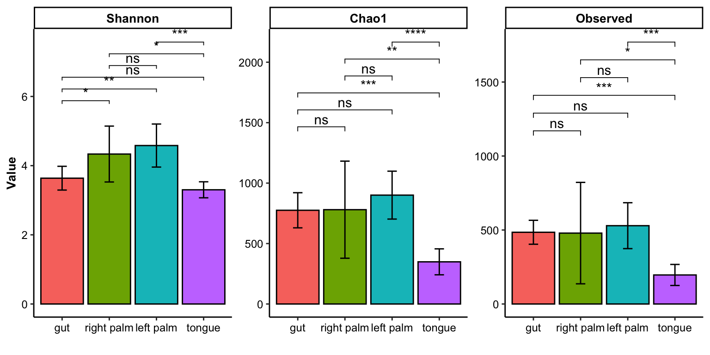
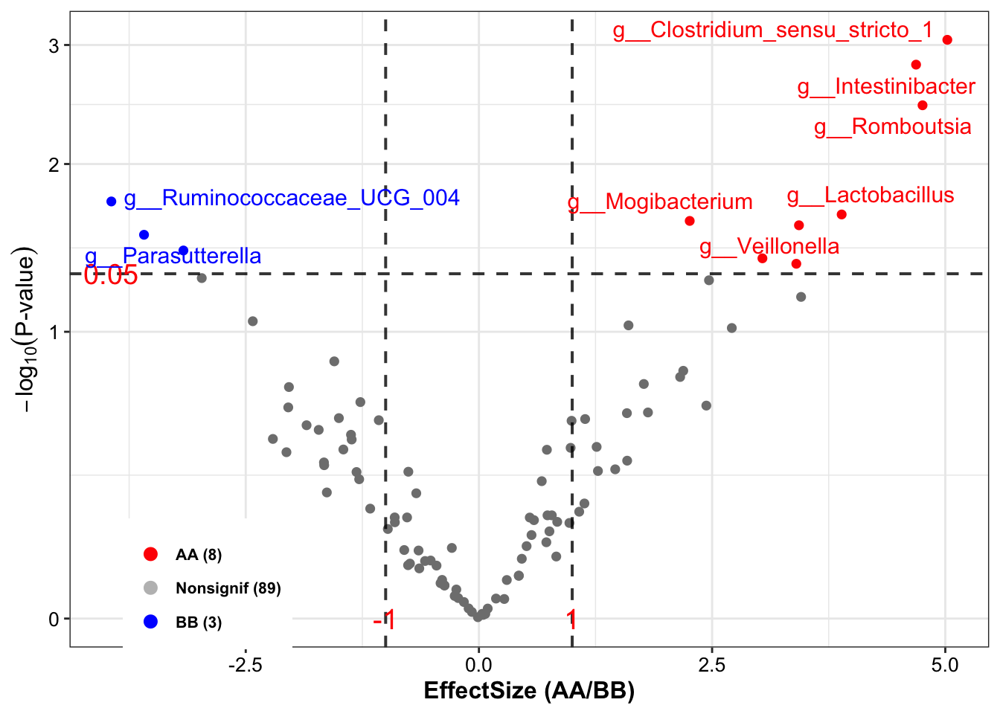
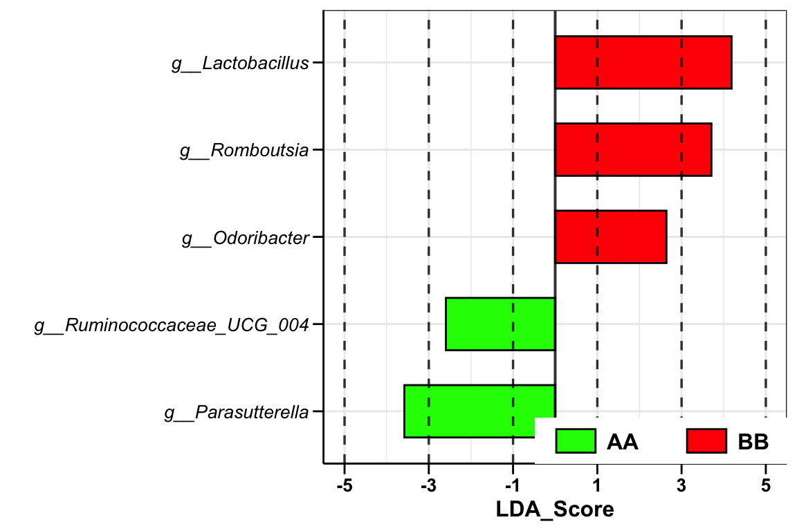
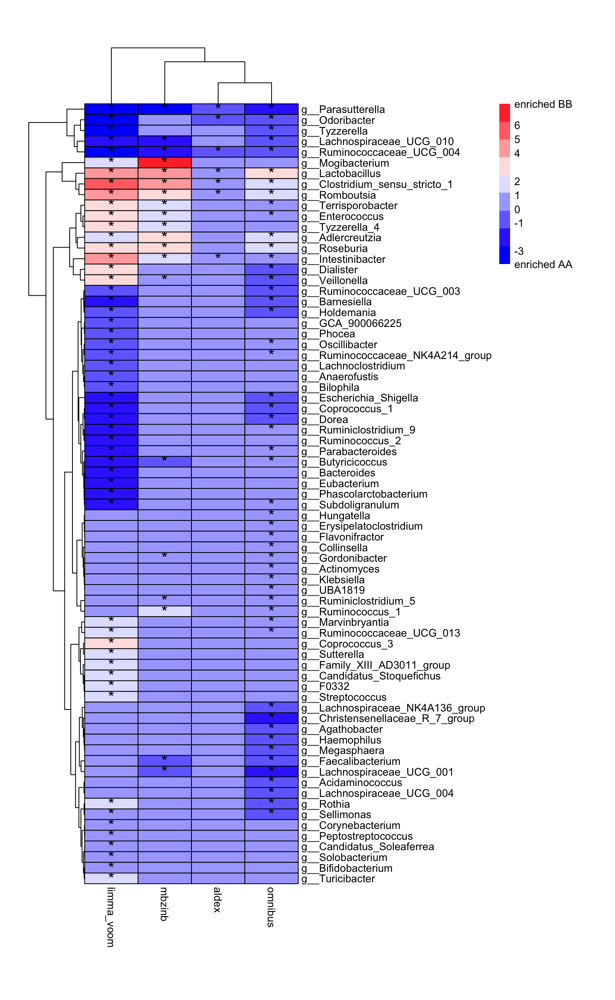

Chapter 11 Differential analysis
Identifying the significant taxa between case and control group is necessary. There are too many differential analysis (DA) approaches to choose (Nearing et al. 2022), we provide some of them which focusing on microbial data, including:
| Tool.version. | Input | Normalization | Transformation | Distribution | MicrobialData |
|---|---|---|---|---|---|
| ALDEx2 (1.26.0) | Counts | None | CLR | Dirichlet-multinormial | 16s |
| limma voom (3.50.1) | Counts/Relative | None/TMM | Log; Precision weighting | Normal | 16s/MGS |
| mbzinb (0.2) | Counts | RLE | None | Zero-inflated negative binomial | 16s |
| omnibus (0.2) | Counts | GMPR(Geometric Mean of Pairwise Ratios) | None | Zero-inflated negative binomial | 16s |
| RAIDA (1.0) | Counts | None | zero-inflated Log | Modified t-test | 16s |
| Wilcox(rare/CLR) | Counts/Relative | None | None/CLR | Non-parametric | 16s/MGS |
| LEfSe | Rarefied Counts/Relative | TSS | None | Non-parametric | 16s/MGS |
| t-test (rare) | Counts/Relative | None | None | Normal | 16s/MGS |
| metagenomeSeq (1.36.0) | Counts | CSS | Log | Zero-inflated (log) Normal | 16s |
| DESeq2 (1.34.0) | Counts | RLE | None | Negative binomial | 16s |
| edgeR (3.36.0) | Counts | RLE/TMM | None | Negative binomial | 16s |
| ANCOM-II (2.1) | Counts/Relative | None | ALR | Non-parametric | 16s/MGS |
| Corncob (0.2.0) | Counts | None | None | Beta-binomial | 16s |
| MaAslin2 (1.8.0) | Counts/Relative | None/TSS | AST | Normal | 16s/MGS |
Loading packages
library(XMAS2)
library(dplyr)
library(tibble)
library(phyloseq)
library(ggplot2)
library(ggpubr)11.1 Amplicon sequencing microbial data (16s)
We use the same strategy to filter phyloseq object.
data("dada2_ps")
# step1: Removing samples of specific group in phyloseq-class object
dada2_ps_remove_BRS <- get_GroupPhyloseq(
ps = dada2_ps,
group = "Group",
group_names = "QC",
discard = TRUE)
# step2: Rarefying counts in phyloseq-class object
dada2_ps_rarefy <- norm_rarefy(object = dada2_ps_remove_BRS,
size = 51181)
# step3: Extracting specific taxa phyloseq-class object
dada2_ps_rare_genus <- summarize_taxa(ps = dada2_ps_rarefy,
taxa_level = "Genus",
absolute = TRUE)
# step4: Aggregating low relative abundance or unclassified taxa into others
# dada2_ps_genus_LRA <- summarize_LowAbundance_taxa(ps = dada2_ps_rare_genus,
# cutoff = 10,
# unclass = TRUE)
# step4: Filtering the low relative abundance or unclassified taxa by the threshold
dada2_ps_genus_filter <- run_filter(ps = dada2_ps_rare_genus,
cutoff = 10,
unclass = TRUE)
# step5: Trimming the taxa with low occurrence less than threshold
dada2_ps_genus_filter_trim <- run_trim(object = dada2_ps_genus_filter,
cutoff = 0.2,
trim = "feature")
dada2_ps_genus_filter_trim## phyloseq-class experiment-level object
## otu_table() OTU Table: [ 100 taxa and 23 samples ]
## sample_data() Sample Data: [ 23 samples by 1 sample variables ]
## tax_table() Taxonomy Table: [ 100 taxa by 6 taxonomic ranks ]11.1.1 ALDEx2
ALDEx2 package is from Unifying the analysis of high-throughput sequencing datasets: characterizing RNA-seq, 16S rRNA gene sequencing and selective growth experiments by compositional data analysis (Fernandes et al. 2014), and its principle is using log-ratio transformation and statistical testing to find the significant Taxa. (Caution: the otu_table must be integers).
run_aldex provides 11 parameters. For instance, norm and transform are used to normalization and transformation input data. More details to see help(run_aldex).
DA_ALDEx2 <- run_aldex(
ps = dada2_ps_genus_filter_trim,
group = "Group",
group_names = c("AA", "BB"),
method = "t.test")## |------------(25%)----------(50%)----------(75%)----------|colnames(DA_ALDEx2)## [1] "TaxaID" "Block" "Enrichment"
## [4] "EffectSize" "Pvalue" "AdjustedPvalue"
## [7] "Median CLR \n(All)" "Median CLR\nAA" "Median CLR\nBB"
## [10] "Log2FoldChange (Median)\nAA_vs_BB" "Median Abundance\n(All)" "Median Abundance\nAA"
## [13] "Median Abundance\nBB" "Log2FoldChange (Mean)\nAA_vs_BB" "Mean Abundance\n(All)"
## [16] "Mean Abundance\nAA" "Mean Abundance\nBB" "Occurrence (100%)\n(All)"
## [19] "Occurrence (100%)\nAA" "Occurrence (100%)\nBB" "Odds Ratio (95% CI)"head(DA_ALDEx2)## TaxaID Block Enrichment EffectSize Pvalue AdjustedPvalue Median CLR \n(All) Median CLR\nAA
## 1 g__Acidaminococcus 9_AA vs 14_BB Nonsignif 0.03216861 0.6548749 0.9018534 -3.4244631 -3.555905
## 2 g__Actinomyces 9_AA vs 14_BB Nonsignif 0.09330854 0.6658567 0.9138848 2.7645196 2.167638
## 3 g__Adlercreutzia 9_AA vs 14_BB Nonsignif 0.30832148 0.3184500 0.7716171 -0.7734251 -2.223805
## 4 g__Agathobacter 9_AA vs 14_BB Nonsignif -0.08089118 0.6408318 0.9042170 5.4463483 6.081374
## 5 g__Akkermansia 9_AA vs 14_BB Nonsignif -0.15579201 0.5972170 0.8723074 -2.9580004 -2.541838
## 6 g__Alistipes 9_AA vs 14_BB Nonsignif -0.09579649 0.6356202 0.9052481 3.7226931 4.768802
## Median CLR\nBB Log2FoldChange (Median)\nAA_vs_BB Median Abundance\n(All) Median Abundance\nAA Median Abundance\nBB
## 1 -3.3102684 NA 0 0 0.0
## 2 3.1218379 -0.9577718 30 26 50.5
## 3 0.3041529 NA 0 0 9.0
## 4 5.3302183 0.1524904 316 329 296.0
## 5 -3.2004909 NA 0 0 0.0
## 6 3.4586946 -0.1085245 64 64 69.0
## Log2FoldChange (Mean)\nAA_vs_BB Mean Abundance\n(All) Mean Abundance\nAA Mean Abundance\nBB Occurrence (100%)\n(All)
## 1 1.7051442 58.82609 101.777778 31.21429 21.74
## 2 -1.3107676 50.91304 26.777778 66.42857 82.61
## 3 -2.4683647 19.21739 5.111111 28.28571 43.48
## 4 1.7488297 996.26087 1740.444444 517.85714 65.22
## 5 -2.1676332 93.78261 30.000000 134.78571 21.74
## 6 0.2000385 163.86957 177.888889 154.85714 73.91
## Occurrence (100%)\nAA Occurrence (100%)\nBB Odds Ratio (95% CI)
## 1 22.22 21.43 0.67 (-0.11;1.5)
## 2 88.89 78.57 4.1 (6.8;1.3)
## 3 33.33 50.00 8.6 (13;4.3)
## 4 55.56 71.43 0.39 (-1.4;2.2)
## 5 22.22 21.43 1.5 (2.3;0.71)
## 6 77.78 71.43 0.88 (0.64;1.1)Results:
The results comprises more than 10 columns, and the details as follow:
TaxaID: taxa name;
Block: groups’ names and numbers;
Enrichment: enriched direction based on Median Abundance and AdjustedPvalue;
EffectSize: effect size of taxa by ALDEx2;
Pvalue and AdjustedPvalue: significant level of Pvalue and Adjusted-pvalue by ALDEx2;
Median CLR (All)/(group AA)/(group BB): Median CLR (normalization by ALDEx2) in all, group AA and group BB, respectively;
**Log2FoldChange (Median)_vs_BB**: Log2FoldChange (Median Abundance) between group AA and group BB;
Median Abundance (All)/(group AA)/(group BB): Median Abundance in all, group AA and group BB, respectively;
**Log2FoldChange (Mean)_vs_BB**: Log2FoldChange (Mean Abundance) between group AA and group BB;
Mean Abundance (All)/(group AA)/(group BB): Mean Abundance in all, group AA and group BB, respectively;
Occurrence (All)/(group AA)/(group BB): Occurrence in all, group AA and group BB, respectively;
Odds Ratio (95% CI): 95% confidence interval odds ratio between group AA and group BB.
Please open the below buttons, if you want to see other options for differential analysis in ALDEx2.
run_da() pattern
We also provide another function run_da to run ALDEx2 differential analysis.
DA_ALDEx2 <- run_da(
ps = dada2_ps_genus_filter_trim,
group = "Group",
group_names = c("AA", "BB"),
da_method = "aldex",
method = "t.test")## |------------(25%)----------(50%)----------(75%)----------|colnames(DA_ALDEx2)## [1] "TaxaID" "Block" "Enrichment"
## [4] "EffectSize" "Pvalue" "AdjustedPvalue"
## [7] "Median CLR \n(All)" "Median CLR\nAA" "Median CLR\nBB"
## [10] "Log2FoldChange (Median)\nAA_vs_BB" "Median Abundance\n(All)" "Median Abundance\nAA"
## [13] "Median Abundance\nBB" "Log2FoldChange (Mean)\nAA_vs_BB" "Mean Abundance\n(All)"
## [16] "Mean Abundance\nAA" "Mean Abundance\nBB" "Occurrence (100%)\n(All)"
## [19] "Occurrence (100%)\nAA" "Occurrence (100%)\nBB" "Odds Ratio (95% CI)"otu_table or sample_table as inputdata
We also provide data_otu and data_sam as input data to run run_aldex.
DA_ALDEx2 <- run_aldex(
data_otu = phyloseq::otu_table(dada2_ps_genus_filter_trim),
data_sam = phyloseq::sample_data(dada2_ps_genus_filter_trim),
group = "Group",
group_names = c("AA", "BB"),
method = "t.test")## |------------(25%)----------(50%)----------(75%)----------|colnames(DA_ALDEx2)## [1] "TaxaID" "Block" "Enrichment"
## [4] "EffectSize" "Pvalue" "AdjustedPvalue"
## [7] "Median CLR \n(All)" "Median CLR\nAA" "Median CLR\nBB"
## [10] "Log2FoldChange (Median)\nAA_vs_BB" "Median Abundance\n(All)" "Median Abundance\nAA"
## [13] "Median Abundance\nBB" "Log2FoldChange (Mean)\nAA_vs_BB" "Mean Abundance\n(All)"
## [16] "Mean Abundance\nAA" "Mean Abundance\nBB" "Occurrence (100%)\n(All)"
## [19] "Occurrence (100%)\nAA" "Occurrence (100%)\nBB" "Odds Ratio (95% CI)"taxa_level option
We also provide taxa_level for choosing the specific taxonomic level to run run_aldex.
DA_ALDEx2 <- run_aldex(
ps = dada2_ps,
taxa_level = "Genus",
group = "Group",
group_names = c("AA", "BB"),
method = "t.test")## |------------(25%)----------(50%)----------(75%)----------|colnames(DA_ALDEx2)## [1] "TaxaID" "Block" "Enrichment"
## [4] "EffectSize" "Pvalue" "AdjustedPvalue"
## [7] "Median CLR \n(All)" "Median CLR\nAA" "Median CLR\nBB"
## [10] "Log2FoldChange (Median)\nAA_vs_BB" "Median Abundance\n(All)" "Median Abundance\nAA"
## [13] "Median Abundance\nBB" "Log2FoldChange (Mean)\nAA_vs_BB" "Mean Abundance\n(All)"
## [16] "Mean Abundance\nAA" "Mean Abundance\nBB" "Occurrence (100%)\n(All)"
## [19] "Occurrence (100%)\nAA" "Occurrence (100%)\nBB" "Odds Ratio (95% CI)"11.1.2 limma_voom
limma package is from voom: Precision weights unlock linear model analysis tools for RNA-seq read counts (Law et al. 2014). Firstly, transforming count data to log2-counts per million (logCPM), estimate the mean-variance relationship and use this to compute appropriate observation-level weights. Secondly, fitting multiple linear models by weighted or generalized least squares. Finally, performing empirical bayes statistics for differential expression.
run_limma_voom provides 11 parameters. For instance, norm and transform are used to normalization and transformation input data. More details to see help(run_limma_voom).
DA_limma_voom <- run_limma_voom(
ps = dada2_ps_genus_filter_trim,
group = "Group",
group_names = c("AA", "BB"))
colnames(DA_limma_voom)## [1] "TaxaID" "Block" "Enrichment"
## [4] "EffectSize" "logFC" "Pvalue"
## [7] "AdjustedPvalue" "Log2FoldChange (Median)\nAA_vs_BB" "Median Abundance\n(All)"
## [10] "Median Abundance\nAA" "Median Abundance\nBB" "Log2FoldChange (Mean)\nAA_vs_BB"
## [13] "Mean Abundance\n(All)" "Mean Abundance\nAA" "Mean Abundance\nBB"
## [16] "Occurrence (100%)\n(All)" "Occurrence (100%)\nAA" "Occurrence (100%)\nBB"
## [19] "Odds Ratio (95% CI)"head(DA_limma_voom)## TaxaID Block Enrichment EffectSize logFC Pvalue AdjustedPvalue
## 1 g__Clostridium_sensu_stricto_1 9_AA vs 14_BB Nonsignif 5.021733 5.021733 0.0008906114 0.0766607
## 2 g__Intestinibacter 9_AA vs 14_BB Nonsignif 4.686583 4.686583 0.0015332140 0.0766607
## 3 g__Romboutsia 9_AA vs 14_BB Nonsignif 4.756063 4.756063 0.0034873620 0.1162454
## 4 g__Ruminococcaceae_UCG_004 9_AA vs 14_BB Nonsignif -3.940866 -3.940866 0.0181806330 0.3696540
## 5 g__Lactobacillus 9_AA vs 14_BB Nonsignif 3.888865 3.888865 0.0221002911 0.3696540
## 6 g__Veillonella 9_AA vs 14_BB Nonsignif 3.431177 3.431177 0.0258757799 0.3696540
## Log2FoldChange (Median)\nAA_vs_BB Median Abundance\n(All) Median Abundance\nAA Median Abundance\nBB
## 1 NA 11 0 39.5
## 2 NA 14 0 58.0
## 3 -7.036174 107 2 262.5
## 4 NA 11 104 0.0
## 5 -3.033423 56 24 196.5
## 6 NA 13 0 40.5
## Log2FoldChange (Mean)\nAA_vs_BB Mean Abundance\n(All) Mean Abundance\nAA Mean Abundance\nBB Occurrence (100%)\n(All)
## 1 -4.884638 257.21739 14.00000 413.57143 60.87
## 2 -2.157952 83.56522 26.88889 120.00000 60.87
## 3 -3.131606 296.47826 51.77778 453.78571 78.26
## 4 2.275424 65.26087 126.22222 26.07143 52.17
## 5 -5.090571 791.26087 37.44444 1275.85714 86.96
## 6 -0.635927 65.52174 49.00000 76.14286 56.52
## Occurrence (100%)\nAA Occurrence (100%)\nBB Odds Ratio (95% CI)
## 1 22.22 85.71 11000 (11000;11000)
## 2 22.22 85.71 4.2 (7;1.4)
## 3 55.56 92.86 37 (44;30)
## 4 77.78 35.71 0.17 (-3.3;3.6)
## 5 77.78 92.86 1.8e+08 (1.8e+08;1.8e+08)
## 6 22.22 78.57 1.3 (1.8;0.79)Results:
The results comprises more than 10 columns, and the details as follow:
TaxaID: taxa name;
Block: groups’ names and numbers;
Enrichment: enriched direction based on Median Abundance and AdjustedPvalue;
EffectSize: effect size of taxa by limma;
logFC: LogFC from groups’ coefficient by limma;
Pvalue and AdjustedPvalue: significant level of Pvalue and Adjusted-pvalue by limma;
**Log2FoldChange (Median)_vs_BB**: Log2FoldChange (Median Abundance) between group AA and group BB;
Median Abundance (All)/(group AA)/(group BB): Median Abundance in all, group AA and group BB, respectively;
**Log2FoldChange (Mean)_vs_BB**: Log2FoldChange (Mean Abundance) between group AA and group BB;
Mean Abundance (All)/(group AA)/(group BB): Mean Abundance in all, group AA and group BB, respectively;
Occurrence (All)/(group AA)/(group BB): Occurrence in all, group AA and group BB, respectively;
Odds Ratio (95% CI): 95% confidence interval odds ratio between group AA and group BB.
Please open the below buttons, if you want to see other options for differential analysis in limma.
other options for limma-voom
if(0) {
DA_limma_voom <- run_limma_voom(
data_otu = phyloseq::otu_table(dada2_ps_genus_filter_trim),
data_sam = phyloseq::sample_data(dada2_ps_genus_filter_trim),
group = "Group",
group_names = c("AA", "BB"))
DA_limma_voom <- run_limma_voom(
ps = dada2_ps,
taxa_level = "Genus",
group = "Group",
group_names = c("AA", "BB"))
DA_limma_voom <- run_da(
ps = dada2_ps_genus_filter_trim,
group = "Group",
group_names = c("AA", "BB"))
head(DA_limma_voom)
}11.1.3 mbzinb
mbzinb package is from An omnibus test for differential distribution analysis of microbiome sequencing data (J. Chen et al. 2018). It uses zeroinflated negative binomial model to investigate the significant taxa. (Caution: the otu_table must be integers).
DA_mbzinb <- run_mbzinb(
ps = dada2_ps_genus_filter_trim,
group = "Group",
group_names = c("AA", "BB"))
colnames(DA_mbzinb)## [1] "TaxaID" "Block" "Enrichment"
## [4] "Pvalue" "AdjustedPvalue" "EffectSize"
## [7] "base.mean" "mean.LFC" "base.abund"
## [10] "abund.LFC" "base.prev" "prev.change"
## [13] "base.disp" "disp.LFC" "statistic"
## [16] "Log2FoldChange (Median)\nAA_vs_BB" "Median Abundance\n(All)" "Median Abundance\nAA"
## [19] "Median Abundance\nBB" "Log2FoldChange (Mean)\nAA_vs_BB" "Mean Abundance\n(All)"
## [22] "Mean Abundance\nAA" "Mean Abundance\nBB" "Occurrence (100%)\n(All)"
## [25] "Occurrence (100%)\nAA" "Occurrence (100%)\nBB" "Odds Ratio (95% CI)"head(DA_mbzinb)## TaxaID Block Enrichment Pvalue AdjustedPvalue EffectSize base.mean mean.LFC
## 1 g__Lactobacillus 9_AA vs 14_BB Nonsignif 0.003445014 0.1564333 1238.41270 33.59784 4.5605786
## 2 g__Veillonella 9_AA vs 14_BB Nonsignif 0.005578505 0.1564333 27.14286 40.19132 0.6303784
## 3 g__Clostridium_sensu_stricto_1 9_AA vs 14_BB Nonsignif 0.007406534 0.1564333 399.57143 10.61857 4.5552518
## 4 g__Ruminiclostridium_5 9_AA vs 14_BB Nonsignif 0.007582511 0.1564333 25.62698 30.04447 0.8479487
## 5 g__Ruminococcus_1 9_AA vs 14_BB Nonsignif 0.008839059 0.1564333 88.71429 39.70707 1.7153262
## 6 g__Tyzzerella_4 9_AA vs 14_BB Nonsignif 0.010053476 0.1564333 169.41270 51.73606 1.7830194
## base.abund abund.LFC base.prev prev.change base.disp disp.LFC statistic Log2FoldChange (Median)\nAA_vs_BB
## 1 42.55933 4.2823480 0.7894354 0.1679182 9.014570e-01 1.275777 13.63594 -3.0334230
## 2 180.85352 -1.2059334 0.2222314 0.5713478 5.952821e-02 3.984325 12.60309 NA
## 3 46.18153 2.4345380 0.2299311 0.7700602 1.205364e+00 1.475574 11.99319 NA
## 4 30.04447 1.0696202 1.0000000 -0.1424287 1.214928e-01 1.749897 11.94257 -0.3289485
## 5 178.70020 1.0269047 0.2221994 0.1358792 2.507315e-09 28.621384 11.61166 NA
## 6 465.54115 -0.4966242 0.1111310 0.4284745 1.370351e-09 30.800186 11.33333 NA
## Median Abundance\n(All) Median Abundance\nAA Median Abundance\nBB Log2FoldChange (Mean)\nAA_vs_BB
## 1 56 24 196.5 -5.0905713
## 2 13 0 40.5 -0.6359270
## 3 11 0 39.5 -4.8846378
## 4 45 41 51.5 -0.7849381
## 5 0 0 0.0 -1.4189209
## 6 0 0 4.5 -2.0807691
## Mean Abundance\n(All) Mean Abundance\nAA Mean Abundance\nBB Occurrence (100%)\n(All) Occurrence (100%)\nAA
## 1 791.26087 37.44444 1275.85714 86.96 77.78
## 2 65.52174 49.00000 76.14286 56.52 22.22
## 3 257.21739 14.00000 413.57143 60.87 22.22
## 4 51.04348 35.44444 61.07143 91.30 100.00
## 5 107.00000 53.00000 141.71429 30.43 22.22
## 6 155.56522 52.44444 221.85714 34.78 11.11
## Occurrence (100%)\nBB Odds Ratio (95% CI)
## 1 92.86 1.8e+08 (1.8e+08;1.8e+08)
## 2 78.57 1.3 (1.8;0.79)
## 3 85.71 11000 (11000;11000)
## 4 85.71 2.4 (4.2;0.69)
## 5 35.71 1.6 (2.6;0.68)
## 6 50.00 2.1 (3.5;0.64)Results:
The results comprises more than 10 columns, and the details as follow:
TaxaID: taxa name;
Block: groups’ names and numbers;
Enrichment: enriched direction based on Median Abundance and AdjustedPvalue;
EffectSize: effect size of taxa by mbzinb;
Pvalue and AdjustedPvalue: significant level of Pvalue and Adjusted-pvalue by mbzinb;
base.mean: fitted mean abundance parameter times the fitted prevalence in baseline group;
mean.LFC: log2-fold change in fitted mean between other group and baseline;
base.abund: fitted mean abundance parameter in baseline group;
abund.LFC: log2-fold change in fitted mean abundance parameter between other group and baseline;
base.prev: fitted prevalence in baseline group;
prev.change: (linear) difference in prevalence between baseline group and other group (other-baseline);
base.disp: fitted dispersion parameter in baseline group;
disp.LFC: log2-fold change in fitted dispersion parameter between other group and baseline;
statistic: value of likelihood ratio test statistic;
**Log2FoldChange (Median)_vs_BB**: Log2FoldChange (Median Abundance) between group AA and group BB;
Median Abundance (All)/(group AA)/(group BB): Median Abundance in all, group AA and group BB, respectively;
**Log2FoldChange (Mean)_vs_BB**: Log2FoldChange (Mean Abundance) between group AA and group BB;
Mean Abundance (All)/(group AA)/(group BB): Mean Abundance in all, group AA and group BB, respectively;
Occurrence (All)/(group AA)/(group BB): Occurrence in all, group AA and group BB, respectively;
Odds Ratio (95% CI): 95% confidence interval odds ratio between group AA and group BB.
Please open the below buttons, if you want to see other options for differential analysis in mbzinb.
other options for mbzinb
if(0) {
DA_mbzinb <- run_mbzinb(
data_otu = phyloseq::otu_table(dada2_ps_genus_filter_trim),
data_sam = phyloseq::sample_data(dada2_ps_genus_filter_trim),
group = "Group",
group_names = c("AA", "BB"))
DA_mbzinb <- run_mbzinb(
ps = dada2_ps,
taxa_level = "Genus",
group = "Group",
group_names = c("AA", "BB"))
DA_mbzinb <- run_da(
ps = dada2_ps_genus_filter_trim,
group = "Group",
group_names = c("AA", "BB"))
head(DA_mbzinb)
}11.1.4 omnibus
This approach is also from mbzinb (J. Chen et al. 2018) package. it uses GMPR (Geometric Mean of Pairwise Ratios) (L. Chen et al. 2018) to get the size factors.
where we specify models for count (abundance), zero (prevalence) and dispersion part. We also provide likelihood ratio test (zinb.lrt) for different models.
(Caution: the otu_table must be integers).
DA_omnibus <- run_omnibus(
ps = dada2_ps_genus_filter_trim,
group = "Group",
group_names = c("AA", "BB"),
method = "omnibus")## Start GMPR normalization ...
## Start Winsorization ...
## Perform filtering ...
## --A total of 92 taxa will be tested with a sample size of 23 !
## --Omnibus test is selected!
## --Dispersion is treated as a parameter of interest!
## Start testing ...
## 10 %
## 20 %
## 30 %
## 40 %
## 50 %
## 60 %
## 70 %
## 80 %
## 90 %
## 100%!
## Handle failed taxa using permutation test!
## Permutation test ....
## Completed!colnames(DA_omnibus)## [1] "TaxaID" "Block" "Enrichment"
## [4] "Pvalue" "AdjustedPvalue" "EffectSize"
## [7] "chi.stat" "df" "abund.baseline"
## [10] "prev.baseline" "dispersion.baseline" "abund.LFC.CompvarBB.est"
## [13] "abund.LFC.CompvarBB.se" "prev.LOD.CompvarBB.est" "prev.LOD.CompvarBB.se"
## [16] "dispersion.LFC.CompvarBB.est" "dispersion.LFC.CompvarBB.se" "method"
## [19] "Log2FoldChange (Median)\nAA_vs_BB" "Median Abundance\n(All)" "Median Abundance\nAA"
## [22] "Median Abundance\nBB" "Log2FoldChange (Mean)\nAA_vs_BB" "Mean Abundance\n(All)"
## [25] "Mean Abundance\nAA" "Mean Abundance\nBB" "Occurrence (100%)\n(All)"
## [28] "Occurrence (100%)\nAA" "Occurrence (100%)\nBB" "Odds Ratio (95% CI)"head(DA_omnibus)## TaxaID Block Enrichment Pvalue AdjustedPvalue EffectSize chi.stat df abund.baseline
## 1 g__Acidaminococcus 9_AA vs 14_BB Nonsignif 0.26476211 0.6245670 70.56349 3.9696315 3 0.0050842054
## 2 g__Actinomyces 9_AA vs 14_BB Nonsignif 0.13905545 0.4437791 39.65079 5.4930407 3 0.0006912502
## 3 g__Adlercreutzia 9_AA vs 14_BB Nonsignif 0.06293962 0.3795000 23.17460 7.2995223 3 0.0003647798
## 4 g__Agathobacter 9_AA vs 14_BB Nonsignif 0.12024562 0.4437791 1222.58730 5.8287526 3 0.0553800205
## 5 g__Akkermansia 9_AA vs 14_BB Nonsignif 0.86344681 0.9142217 104.78571 0.7413110 3 0.0031212219
## 6 g__Alistipes 9_AA vs 14_BB Nonsignif 0.97967175 0.9796718 23.03175 0.1869261 3 0.0049314397
## prev.baseline dispersion.baseline abund.LFC.CompvarBB.est abund.LFC.CompvarBB.se prev.LOD.CompvarBB.est
## 1 0.2910300 0.2041100 -0.36978708 1.4040484 -0.4088983
## 2 0.8894593 3.1647486 0.73754098 0.3062639 -0.7727912
## 3 0.3333734 11.0696374 1.29262130 0.3614490 0.6959681
## 4 0.5555645 1.6324698 -1.15572656 0.4756819 0.6968830
## 5 0.2357130 0.5149302 -0.83042868 1.7432216 2.3976744
## 6 0.7815505 1.0012623 0.03215791 0.4770876 -0.3541131
## prev.LOD.CompvarBB.se dispersion.LFC.CompvarBB.est dispersion.LFC.CompvarBB.se method
## 1 0.9811747 2.8343543 1.1361534 omnibus
## 2 1.2480678 -0.5318657 0.6766040 omnibus
## 3 0.8863794 -1.7738398 1.4812754 omnibus
## 4 0.8947568 -0.5257607 0.7011677 omnibus
## 5 1.0114415 -2.4675480 1.0580187 omnibus
## 6 1.0007538 0.1662740 0.6265328 omnibus
## Log2FoldChange (Median)\nAA_vs_BB Median Abundance\n(All) Median Abundance\nAA Median Abundance\nBB
## 1 NA 0 0 0.0
## 2 -0.9577718 30 26 50.5
## 3 NA 0 0 9.0
## 4 0.1524904 316 329 296.0
## 5 NA 0 0 0.0
## 6 -0.1085245 64 64 69.0
## Log2FoldChange (Mean)\nAA_vs_BB Mean Abundance\n(All) Mean Abundance\nAA Mean Abundance\nBB Occurrence (100%)\n(All)
## 1 1.7051442 58.82609 101.777778 31.21429 21.74
## 2 -1.3107676 50.91304 26.777778 66.42857 82.61
## 3 -2.4683647 19.21739 5.111111 28.28571 43.48
## 4 1.7488297 996.26087 1740.444444 517.85714 65.22
## 5 -2.1676332 93.78261 30.000000 134.78571 21.74
## 6 0.2000385 163.86957 177.888889 154.85714 73.91
## Occurrence (100%)\nAA Occurrence (100%)\nBB Odds Ratio (95% CI)
## 1 22.22 21.43 0.67 (-0.11;1.5)
## 2 88.89 78.57 4.1 (6.8;1.3)
## 3 33.33 50.00 8.6 (13;4.3)
## 4 55.56 71.43 0.39 (-1.4;2.2)
## 5 22.22 21.43 1.5 (2.3;0.71)
## 6 77.78 71.43 0.88 (0.64;1.1)Results:
The results comprises more than 10 columns, and the details as follow:
TaxaID: taxa name;
Block: groups’ names and numbers;
Enrichment: enriched direction based on Median Abundance and AdjustedPvalue;
EffectSize: effect size of taxa by glm function to assess the pvalue effect;
Pvalue and AdjustedPvalue: significant level of Pvalue and Adjusted-pvalue by omnibus;
chi.stat: chisquare statistics;
df: degree freedom;
abund.baseline: mean abundance in baseline group;
prev.baseline: prevalence in baseline group;
dispersion.baseline: dispersion in baseline group;
abund.LFC.CompvarBB.est: log2-fold change in abundance between group BB and other group;
abund.LFC.CompvarBB.se: log2-fold change of standard errors in abundance between group BB and other group;
prev.LOD.CompvarBB.est: prevalence of low of detect value in group BB;
prev.LOD.CompvarBB.se: prevalence’s standard errors of low of detect value in group BB;
dispersion.LFC.CompvarBB.est: log2-fold change in dispersion in group BB;
dispersion.LFC.CompvarBB.se: log2-fold change in dispersion’s standard errors in group BB;
method: methods of test;
**Log2FoldChange (Median)_vs_BB**: Log2FoldChange (Median Abundance) between group AA and group BB;
Median Abundance (All)/(group AA)/(group BB): Median Abundance in all, group AA and group BB, respectively;
**Log2FoldChange (Mean)_vs_BB**: Log2FoldChange (Mean Abundance) between group AA and group BB;
Mean Abundance (All)/(group AA)/(group BB): Mean Abundance in all, group AA and group BB, respectively;
Occurrence (All)/(group AA)/(group BB): Occurrence in all, group AA and group BB, respectively;
Odds Ratio (95% CI): 95% confidence interval odds ratio between group AA and group BB.
Please open the below buttons, if you want to see other options for differential analysis in omnibus.
other options for omnibus
if(0) {
DA_omnibus <- run_omnibus(
data_otu = phyloseq::otu_table(dada2_ps_genus_filter_trim),
data_sam = phyloseq::sample_data(dada2_ps_genus_filter_trim),
group = "Group",
group_names = c("AA", "BB"),
method = "omnibus")
DA_omnibus <- run_omnibus(
ps = dada2_ps,
taxa_level = "Genus",
group = "Group",
group_names = c("AA", "BB"),
method = "omnibus")
DA_omnibus <- run_da(
ps = dada2_ps_genus_filter_trim,
group = "Group",
group_names = c("AA", "BB"),
da_method = "omnibus",
method = "omnibus")
head(DA_omnibus)
}11.1.5 RAIDA
RAIDA package is from A robust approach for identifying differentially abundant features in metagenomic samples (Sohn, Du, and An 2015). It uses Ratio Approach for Identifying Differential Abundance (RAIDA). (Caution: the otu_table must be integers).
DA_RAIDA <- run_raida(
ps = dada2_ps_genus_filter_trim,
group = "Group",
group_names = c("AA", "BB"))
colnames(DA_RAIDA)## [1] "TaxaID" "Block" "Enrichment"
## [4] "EffectSize" "Pvalue" "AdjustedPvalue"
## [7] "eta_AA" "mean_AA" "sd_AA"
## [10] "eta_BB" "mean_BB" "sd_BB"
## [13] "mod.pool.var" "Log2FoldChange (Median)\nAA_vs_BB" "Median Abundance\n(All)"
## [16] "Median Abundance\nAA" "Median Abundance\nBB" "Log2FoldChange (Mean)\nAA_vs_BB"
## [19] "Mean Abundance\n(All)" "Mean Abundance\nAA" "Mean Abundance\nBB"
## [22] "Occurrence (100%)\n(All)" "Occurrence (100%)\nAA" "Occurrence (100%)\nBB"
## [25] "Odds Ratio (95% CI)"head(DA_RAIDA)## TaxaID Block Enrichment EffectSize Pvalue AdjustedPvalue eta_AA mean_AA
## 1 g__Mogibacterium 9_AA vs 14_BB Nonsignif 32.53175 0.004340020 0.2061720 1.0000000 -6.665684
## 2 g__Megasphaera 9_AA vs 14_BB Nonsignif 409.19048 0.004581601 0.2061720 0.6666667 1.550194
## 3 g__Romboutsia 9_AA vs 14_BB Nonsignif 402.00794 0.025287679 0.7353741 0.4444444 -3.748832
## 4 g__Lactobacillus 9_AA vs 14_BB Nonsignif 1238.41270 0.033492279 0.7353741 0.2222222 -3.438359
## 5 g__Tyzzerella 9_AA vs 14_BB Nonsignif 75.78571 0.059752064 0.7353741 0.4444444 -2.455253
## 6 g__Christensenellaceae_R_7_group 9_AA vs 14_BB Nonsignif 44.21429 0.068999409 0.7353741 0.6666667 -2.344046
## sd_AA eta_BB mean_BB sd_BB mod.pool.var Log2FoldChange (Median)\nAA_vs_BB Median Abundance\n(All)
## 1 0.0000010 0.57142857 -3.409936 1.909244 2.765864 NA 0
## 2 0.4452225 0.64285714 -1.221216 1.074673 1.185998 NA 0
## 3 1.5814829 0.07142857 -1.467304 2.085972 3.260003 -7.036174 107
## 4 1.7766726 0.07142857 -1.250908 2.484244 4.276535 -3.033423 56
## 5 1.3348729 0.78571429 -5.123355 3.191661 3.081402 NA 0
## 6 0.5621146 0.64285714 -4.420090 1.890465 2.021487 NA 0
## Median Abundance\nAA Median Abundance\nBB Log2FoldChange (Mean)\nAA_vs_BB Mean Abundance\n(All) Mean Abundance\nAA
## 1 0 0.0 -8.198620 19.91304 0.1111111
## 2 0 0.0 1.738259 335.26087 584.3333333
## 3 2 262.5 -3.131606 296.47826 51.7777778
## 4 24 196.5 -5.090571 791.26087 37.4444444
## 5 4 0.0 2.433624 46.86957 93.0000000
## 6 0 0.0 1.801549 35.08696 62.0000000
## Mean Abundance\nBB Occurrence (100%)\n(All) Occurrence (100%)\nAA Occurrence (100%)\nBB Odds Ratio (95% CI)
## 1 32.64286 30.43 11.11 42.86 2e+283 (2e+283;2e+283)
## 2 175.14286 34.78 33.33 35.71 0.54 (-0.65;1.7)
## 3 453.78571 78.26 55.56 92.86 37 (44;30)
## 4 1275.85714 86.96 77.78 92.86 1.8e+08 (1.8e+08;1.8e+08)
## 5 17.21429 34.78 55.56 21.43 0.4 (-1.4;2.2)
## 6 17.78571 34.78 33.33 35.71 0.54 (-0.65;1.7)Results:
The results comprises more than 10 columns, and the details as follow:
TaxaID: taxa name;
Block: groups’ names and numbers;
Enrichment: enriched direction based on Median Abundance and AdjustedPvalue;
EffectSize: effect size of taxa by glm function to assess the pvalue effect;
Pvalue and AdjustedPvalue: significant level of Pvalue and Adjusted-pvalue by RAIDA;
eta_AA: vector containing estimated probabilities of the false zero state for group AA;
mean_AA: vector containing estimated means of log ratios for group AA;
sd_AA: vector containing estimated standard deviations of log ratios for group AA;
eta_BB: vector containing estimated probabilities of the false zero state for group BB;
mean_BB: vector containing estimated means of log ratios for group BB;
sd_BB: vector containing estimated standard deviations of log ratios for group BB;
mod.pool.var: vector containing estimated posterior variances of log ratios;
**Log2FoldChange (Median)_vs_BB**: Log2FoldChange (Median Abundance) between group AA and group BB;
Median Abundance (All)/(group AA)/(group BB): Median Abundance in all, group AA and group BB, respectively;
**Log2FoldChange (Mean)_vs_BB**: Log2FoldChange (Mean Abundance) between group AA and group BB;
Mean Abundance (All)/(group AA)/(group BB): Mean Abundance in all, group AA and group BB, respectively;
Occurrence (All)/(group AA)/(group BB): Occurrence in all, group AA and group BB, respectively;
Odds Ratio (95% CI): 95% confidence interval odds ratio between group AA and group BB.
Please open the below buttons, if you want to see other options for differential analysis in RAIDA.
other options for RAIDA
if (0) {
DA_RAIDA <- run_raida(
data_otu = phyloseq::otu_table(dada2_ps_genus_filter_trim),
data_sam = phyloseq::sample_data(dada2_ps_genus_filter_trim),
group = "Group",
group_names = c("AA", "BB"))
DA_RAIDA <- run_raida(
ps = dada2_ps,
taxa_level = "Genus",
group = "Group",
group_names = c("AA", "BB"))
DA_RAIDA <- run_da(
ps = dada2_ps_genus_filter_trim,
group = "Group",
group_names = c("AA", "BB"),
da_method = "raida")
head(DA_RAIDA)
}11.1.6 Wilcoxon Rank Sum and Signed Rank Tests
Wilcoxon Rank Sum and Signed Rank Tests, which are nonparametric test methods, use the rank of taxa abundance to find the significant taxa.
- Ordinary pattern
DA_wilcox <- run_wilcox(
ps = dada2_ps_genus_filter_trim,
group = "Group",
group_names = c("AA", "BB"))
colnames(DA_wilcox)## [1] "TaxaID" "Block" "Enrichment"
## [4] "EffectSize" "Statistic" "Pvalue"
## [7] "AdjustedPvalue" "Log2FoldChange (Median)\nAA_vs_BB" "Median Abundance\n(All)"
## [10] "Median Abundance\nAA" "Median Abundance\nBB" "Log2FoldChange (Rank)\nAA_vs_BB"
## [13] "Mean Rank Abundance\nAA" "Mean Rank Abundance\nBB" "Occurrence (100%)\n(All)"
## [16] "Occurrence (100%)\nAA" "Occurrence (100%)\nBB" "Odds Ratio (95% CI)"head(DA_wilcox)## TaxaID Block Enrichment EffectSize Statistic Pvalue AdjustedPvalue
## 1 g__Acidaminococcus 9_AA vs 14_BB Nonsignif 70.56349 63.5 1.0000000 1.0000000
## 2 g__Actinomyces 9_AA vs 14_BB Nonsignif 39.65079 44.5 0.2556616 0.7014746
## 3 g__Adlercreutzia 9_AA vs 14_BB Nonsignif 23.17460 44.0 0.1980169 0.7014746
## 4 g__Agathobacter 9_AA vs 14_BB Nonsignif 1222.58730 71.0 0.6293971 0.8964389
## 5 g__Akkermansia 9_AA vs 14_BB Nonsignif 104.78571 64.5 0.9304707 0.9692403
## 6 g__Alistipes 9_AA vs 14_BB Nonsignif 23.03175 67.0 0.8239942 0.9363570
## Log2FoldChange (Median)\nAA_vs_BB Median Abundance\n(All) Median Abundance\nAA Median Abundance\nBB
## 1 NA 0 0 0.0
## 2 -0.9577718 30 26 50.5
## 3 NA 0 0 9.0
## 4 0.1524904 316 329 296.0
## 5 NA 0 0 0.0
## 6 -0.1085245 64 64 69.0
## Log2FoldChange (Rank)\nAA_vs_BB Mean Rank Abundance\nAA Mean Rank Abundance\nBB Occurrence (100%)\n(All)
## 1 0.01201252 12.06 11.96 21.74
## 2 -0.42227633 9.94 13.32 82.61
## 3 -0.43387758 9.89 13.36 43.48
## 4 0.17342686 12.89 11.43 65.22
## 5 0.03358045 12.17 11.89 21.74
## 6 0.08724541 12.44 11.71 73.91
## Occurrence (100%)\nAA Occurrence (100%)\nBB Odds Ratio (95% CI)
## 1 22.22 21.43 0.67 (-0.11;1.5)
## 2 88.89 78.57 4.1 (6.8;1.3)
## 3 33.33 50.00 8.6 (13;4.3)
## 4 55.56 71.43 0.39 (-1.4;2.2)
## 5 22.22 21.43 1.5 (2.3;0.71)
## 6 77.78 71.43 0.88 (0.64;1.1)Results:
The results comprises more than 10 columns, and the details as follow:
TaxaID: taxa name;
Block: groups’ names and numbers;
Enrichment: enriched direction based on Median Abundance and AdjustedPvalue;
EffectSize: effect size of taxa by glm function to assess the pvalue effect;
Pvalue and AdjustedPvalue: significant level of Pvalue and Adjusted-pvalue;
**Log2FoldChange (Median)_vs_BB**: Log2FoldChange (Median Abundance) between group AA and group BB;
Median Abundance (All)/(group AA)/(group BB): Median Abundance in all, group AA and group BB, respectively;
**Log2FoldChange (Mean Rank)_vs_BB**: Log2FoldChange (Mean Rank Abundance) between group AA and group BB;
Mean Rank Abundance (All)/(group AA)/(group BB): Mean Rank Abundance in all, group AA and group BB, respectively;
**Log2FoldChange (Mean)_vs_BB**: Log2FoldChange (Mean Abundance) between group AA and group BB;
Mean Abundance (All)/(group AA)/(group BB): Mean Abundance in all, group AA and group BB, respectively;
Occurrence (All)/(group AA)/(group BB): Occurrence in all, group AA and group BB, respectively;
Odds Ratio (95% CI): 95% confidence interval odds ratio between group AA and group BB.
other options for wilcox
if (0) {
DA_wilcox <- run_wilcox(
data_otu = phyloseq::otu_table(dada2_ps_genus_filter_trim),
data_sam = phyloseq::sample_data(dada2_ps_genus_filter_trim),
group = "Group",
group_names = c("AA", "BB"))
DA_wilcox <- run_wilcox(
ps = dada2_ps,
taxa_level = "Genus",
group = "Group",
group_names = c("AA", "BB"))
DA_wilcox <- run_da(
ps = dada2_ps_genus_filter_trim,
group = "Group",
group_names = c("AA", "BB"),
da_method = "wilcox")
head(DA_wilcox)
}- wilcox_rarefy: random subsampling counts to the smallest library size in the data set.
# summary
summarize_phyloseq(ps = dada2_ps_genus_filter_trim)## [[1]]
## [1] "1] Min. number of reads = 32359"
##
## [[2]]
## [1] "2] Max. number of reads = 49328"
##
## [[3]]
## [1] "3] Total number of reads = 1008016"
##
## [[4]]
## [1] "4] Average number of reads = 43826.7826086957"
##
## [[5]]
## [1] "5] Median number of reads = 45596"
##
## [[6]]
## [1] "7] Sparsity = 0.501304347826087"
##
## [[7]]
## [1] "6] Any OTU sum to 1 or less? NO"
##
## [[8]]
## [1] "8] Number of singletons = 0"
##
## [[9]]
## [1] "9] Percent of OTUs that are singletons\n (i.e. exactly one read detected across all samples)0"
##
## [[10]]
## [1] "10] Number of sample variables are: 1"
##
## [[11]]
## [1] "Group"# run
DA_wilcox_rarefy <- run_wilcox(
ps = dada2_ps_genus_filter_trim,
group = "Group",
group_names = c("AA", "BB"),
norm = "rarefy")
colnames(DA_wilcox_rarefy)## [1] "TaxaID" "Block" "Enrichment"
## [4] "EffectSize" "Statistic" "Pvalue"
## [7] "AdjustedPvalue" "Log2FoldChange (Median)\nAA_vs_BB" "Median Abundance\n(All)"
## [10] "Median Abundance\nAA" "Median Abundance\nBB" "Log2FoldChange (Rank)\nAA_vs_BB"
## [13] "Mean Rank Abundance\nAA" "Mean Rank Abundance\nBB" "Occurrence (100%)\n(All)"
## [16] "Occurrence (100%)\nAA" "Occurrence (100%)\nBB" "Odds Ratio (95% CI)"The output is the same as the previous results of ordinary pattern.
other options for wilcox_rarefy
if (0) {
DA_wilcox_rarefy <- run_da(
ps = dada2_ps_genus_filter_trim,
group = "Group",
group_names = c("AA", "BB"),
da_method = "wilcox",
norm = "rarefy")
head(DA_wilcox_rarefy)
}- wilcox_CLR: centered log-ratio normalization.
DA_wilcox_CLR <- run_wilcox(
ps = dada2_ps_genus_filter_trim,
group = "Group",
group_names = c("AA", "BB"),
norm = "CLR")
colnames(DA_wilcox_CLR)## [1] "TaxaID" "Block" "Enrichment"
## [4] "EffectSize" "Statistic" "Pvalue"
## [7] "AdjustedPvalue" "Log2FoldChange (Median)\nAA_vs_BB" "Median Abundance\n(All)"
## [10] "Median Abundance\nAA" "Median Abundance\nBB" "Log2FoldChange (Rank)\nAA_vs_BB"
## [13] "Mean Rank Abundance\nAA" "Mean Rank Abundance\nBB" "Occurrence (100%)\n(All)"
## [16] "Occurrence (100%)\nAA" "Occurrence (100%)\nBB" "Odds Ratio (95% CI)"The output is the same as the previous results of ordinary pattern.
other options for wilcox_CLR
if(0) {
DA_wilcox_CLR <- run_da(
ps = dada2_ps_genus_filter_trim,
group = "Group",
group_names = c("AA", "BB"),
da_method = "wilcox",
norm = "CLR")
head(DA_wilcox_CLR)
}11.1.7 Liner discriminant analysis (LDA) effect size (LEfSe)
LEfSe method is from Metagenomic biomarker discovery and explanation (Segata et al. 2011). It uses Liner discriminant analysis model to identify Differential Taxa.
DA_lefse <- run_lefse(
ps = dada2_ps_genus_filter_trim,
group = "Group",
group_names = c("AA", "BB"),
norm = "CPM",
Lda = 2)
colnames(DA_lefse)## [1] "TaxaID" "Block" "Enrichment"
## [4] "LDA_Score" "EffectSize" "Log2FoldChange (Median)\nAA_vs_BB"
## [7] "Median Abundance\n(All)" "Median Abundance\nAA" "Median Abundance\nBB"
## [10] "Log2FoldChange (Mean)\nAA_vs_BB" "Mean Abundance\n(All)" "Mean Abundance\nAA"
## [13] "Mean Abundance\nBB" "Occurrence (100%)\n(All)" "Occurrence (100%)\nAA"
## [16] "Occurrence (100%)\nBB" "Odds Ratio (95% CI)"head(DA_lefse)## TaxaID Block Enrichment LDA_Score EffectSize Log2FoldChange (Median)\nAA_vs_BB
## 1 g__Parasutterella 9_AA vs 14_BB AA -3.604579 2.234915 4.402050
## 2 g__Ruminococcaceae_UCG_004 9_AA vs 14_BB AA -2.823442 2.137082 NA
## 3 g__Odoribacter 9_AA vs 14_BB BB 2.340309 1.876320 NA
## 4 g__Intestinibacter 9_AA vs 14_BB BB 3.146337 2.384308 NA
## 5 g__Clostridium_sensu_stricto_1 9_AA vs 14_BB BB 3.671138 2.679298 NA
## 6 g__Romboutsia 9_AA vs 14_BB BB 3.705317 2.929140 -6.856424
## Median Abundance\n(All) Median Abundance\nAA Median Abundance\nBB Log2FoldChange (Mean)\nAA_vs_BB
## 1 172.77125 1080.35695 51.09966 4.481148
## 2 241.24923 2451.90494 0.00000 2.342928
## 3 21.93175 604.99989 0.00000 2.099583
## 4 383.50911 0.00000 1398.79740 -1.964554
## 5 225.11921 0.00000 1173.88222 -4.746617
## 6 2189.79596 50.35627 5835.02623 -3.334490
## Mean Abundance\n(All) Mean Abundance\nAA Mean Abundance\nBB Occurrence (100%)\n(All) Occurrence (100%)\nAA
## 1 3901.0977 9320.3061 417.3209 65.22 88.89
## 2 1443.2092 2822.7139 556.3847 52.17 77.78
## 3 578.0758 1083.9017 252.9020 52.17 77.78
## 4 1883.3386 680.6440 2656.4994 60.87 22.22
## 5 5861.9051 350.3379 9405.0554 60.87 22.22
## 6 7094.1306 1086.1419 10956.4090 78.26 55.56
## Occurrence (100%)\nBB Odds Ratio (95% CI)
## 1 50.00 0.0025 (-12;12)
## 2 35.71 0.14 (-3.7;4)
## 3 35.71 0.31 (-2;2.6)
## 4 85.71 3.4 (5.8;1)
## 5 85.71 4900 (5000;4900)
## 6 92.86 76 (85;68)Results:
The results comprises more than 10 columns, and the details as follow:
TaxaID: taxa name;
Block: groups’ names and numbers;
Enrichment: enriched direction based on Median Abundance and AdjustedPvalue;
EffectSize: effect size of taxa by lefse;
LDA_Score: significant level of Pvalue and Adjusted-pvalue;
**Log2FoldChange (Median)_vs_BB**: Log2FoldChange (Median Abundance) between group AA and group BB;
Median Abundance (All)/(group AA)/(group BB): Median Abundance in all, group AA and group BB, respectively;
**Log2FoldChange (Mean)_vs_BB**: Log2FoldChange (Mean Abundance) between group AA and group BB;
Mean Abundance (All)/(group AA)/(group BB): Mean Abundance in all, group AA and group BB, respectively;
Occurrence (All)/(group AA)/(group BB): Occurrence in all, group AA and group BB, respectively;
Odds Ratio (95% CI): 95% confidence interval odds ratio between group AA and group BB.
other options for lefse
if (0) {
DA_lefse <- run_lefse(
data_otu = phyloseq::otu_table(dada2_ps_genus_filter_trim),
data_sam = phyloseq::sample_data(dada2_ps_genus_filter_trim),
group = "Group",
group_names = c("AA", "BB"),
norm = "CPM",
Lda = 0)
DA_lefse <- run_lefse(
ps = dada2_ps,
taxa_level = "Genus",
group = "Group",
group_names = c("AA", "BB"),
norm = "CPM",
Lda = 0)
DA_lefse <- run_da(
ps = dada2_ps_genus_filter_trim,
group = "Group",
group_names = c("AA", "BB"),
da_method = "lefse",
norm = "CPM",
Lda = 0)
head(DA_lefse)
}11.1.8 t-test
T test, a parametric test method, identifies the significant taxa.
- Ordinary pattern
DA_ttest <- run_ttest(
ps = dada2_ps_genus_filter_trim,
group = "Group",
group_names = c("AA", "BB"))
colnames(DA_ttest)## [1] "TaxaID" "Block"
## [3] "Enrichment" "EffectSize"
## [5] "Statistic" "Pvalue"
## [7] "AdjustedPvalue" "Log2FoldChange (Median)\nAA_vs_BB"
## [9] "Median Abundance\n(All)" "Median Abundance\nAA"
## [11] "Median Abundance\nBB" "Log2FoldChange (geometricmean)\nAA_vs_BB"
## [13] "GeometricMean Abundance\n(All)" "GeometricMean Abundance\nAA"
## [15] "GeometricMean Abundance\nBB" "Occurrence (100%)\n(All)"
## [17] "Occurrence (100%)\nAA" "Occurrence (100%)\nBB"
## [19] "Odds Ratio (95% CI)"head(DA_ttest)## TaxaID Block Enrichment EffectSize Statistic Pvalue AdjustedPvalue
## 1 g__Acidaminococcus 9_AA vs 14_BB Nonsignif 70.56349 0.6845254 0.51170983 0.7107081
## 2 g__Actinomyces 9_AA vs 14_BB Nonsignif 39.65079 -1.9079866 0.07478702 0.6397026
## 3 g__Adlercreutzia 9_AA vs 14_BB Nonsignif 23.17460 -2.1601919 0.04743155 0.6397026
## 4 g__Agathobacter 9_AA vs 14_BB Nonsignif 1222.58730 1.4034718 0.19417159 0.6397026
## 5 g__Akkermansia 9_AA vs 14_BB Nonsignif 104.78571 -0.7632086 0.45788140 0.6983360
## 6 g__Alistipes 9_AA vs 14_BB Nonsignif 23.03175 0.2691871 0.79125424 0.9059862
## Log2FoldChange (Median)\nAA_vs_BB Median Abundance\n(All) Median Abundance\nAA Median Abundance\nBB
## 1 NA 0 0 0.0
## 2 -0.9577718 30 26 50.5
## 3 NA 0 0 9.0
## 4 0.1524904 316 329 296.0
## 5 NA 0 0 0.0
## 6 -0.1085245 64 64 69.0
## Log2FoldChange (geometricmean)\nAA_vs_BB GeometricMean Abundance\n(All) GeometricMean Abundance\nAA
## 1 2.674648 1.2740132 4.3847026
## 2 -2.270362 0.6530643 0.1647934
## 3 -3.268970 0.9776732 0.1479603
## 4 1.413058 0.7929084 1.0990412
## 5 -3.452848 1.3734381 0.4150530
## 6 -2.043760 0.4449523 0.2025430
## GeometricMean Abundance\nBB Occurrence (100%)\n(All) Occurrence (100%)\nAA Occurrence (100%)\nBB Odds Ratio (95% CI)
## 1 0.6867376 21.74 22.22 21.43 0.67 (-0.11;1.5)
## 2 0.7950361 82.61 88.89 78.57 4.1 (6.8;1.3)
## 3 1.4262753 43.48 33.33 50.00 8.6 (13;4.3)
## 4 0.4127063 65.22 55.56 71.43 0.39 (-1.4;2.2)
## 5 4.5447977 21.74 22.22 21.43 1.5 (2.3;0.71)
## 6 0.8351231 73.91 77.78 71.43 0.88 (0.64;1.1)Results:
The results comprises more than 10 columns, and the details as follow:
TaxaID: taxa name;
Block: groups’ names and numbers;
Enrichment: enriched direction based on Median Abundance and AdjustedPvalue;
EffectSize: effect size of taxa by glm function to assess the pvalue effect;
Pvalue and AdjustedPvalue: significant level of Pvalue and Adjusted-pvalue;
**Log2FoldChange (Median)_vs_BB**: Log2FoldChange (Median Abundance) between group AA and group BB;
Median Abundance (All)/(group AA)/(group BB): Median Abundance in all, group AA and group BB, respectively;
**Log2FoldChange (GeometricMean)_vs_BB**: Log2FoldChange (GeometricMean Abundance) between group AA and group BB;
GeometricMean Abundance (All)/(group AA)/(group BB): GeometricMean Abundance in all, group AA and group BB, respectively;
**Log2FoldChange (Mean)_vs_BB**: Log2FoldChange (Mean Abundance) between group AA and group BB;
Mean Abundance (All)/(group AA)/(group BB): Mean Abundance in all, group AA and group BB, respectively;
Occurrence (All)/(group AA)/(group BB): Occurrence in all, group AA and group BB, respectively;
Odds Ratio (95% CI): 95% confidence interval odds ratio between group AA and group BB.
other options for t-test
if (0) {
DA_ttest <- run_ttest(
data_otu = phyloseq::otu_table(dada2_ps_genus_filter_trim),
data_sam = phyloseq::sample_data(dada2_ps_genus_filter_trim),
group = "Group",
group_names = c("AA", "BB"))
DA_ttest <- run_ttest(
ps = dada2_ps,
taxa_level = "Genus",
group = "Group",
group_names = c("AA", "BB"))
DA_ttest <- run_da(
ps = dada2_ps_genus_filter_trim,
group = "Group",
group_names = c("AA", "BB"),
da_method = "ttest")
head(DA_ttest)
}- t-test_rarefy: random subsampling counts to the smallest library size in the data set.
DA_ttest_rarefy <- run_ttest(
ps = dada2_ps_genus_filter_trim,
group = "Group",
group_names = c("AA", "BB"),
norm = "rarefy")
colnames(DA_ttest_rarefy)## [1] "TaxaID" "Block"
## [3] "Enrichment" "EffectSize"
## [5] "Statistic" "Pvalue"
## [7] "AdjustedPvalue" "Log2FoldChange (Median)\nAA_vs_BB"
## [9] "Median Abundance\n(All)" "Median Abundance\nAA"
## [11] "Median Abundance\nBB" "Log2FoldChange (geometricmean)\nAA_vs_BB"
## [13] "GeometricMean Abundance\n(All)" "GeometricMean Abundance\nAA"
## [15] "GeometricMean Abundance\nBB" "Occurrence (100%)\n(All)"
## [17] "Occurrence (100%)\nAA" "Occurrence (100%)\nBB"
## [19] "Odds Ratio (95% CI)"The output is the same as the previous results of ordinary pattern.
other options for ttest_rarefy
if (0) {
DA_ttest_rarefy <- run_da(
ps = dada2_ps_genus_filter_trim,
group = "Group",
group_names = c("AA", "BB"),
da_method = "ttest",
norm = "rarefy")
head(DA_ttest_rarefy)
}11.1.9 MetagenomeSeq
MetagenomeSeq package is from Differential abundance analysis for microbial marker-gene surveys (Paulson et al. 2013). It uses zero-inflated Log-Normal mixture model or Zero-inflated Gaussian mixture model to identify the significant taxa between groups. (Caution: the otu_table should be integers).
DA_metagenomeseq <- run_metagenomeseq(
ps = dada2_ps_genus_filter_trim,
group = "Group",
group_names = c("AA", "BB"),
norm = "CSS",
method = "ZILN")
colnames(DA_metagenomeseq)## [1] "TaxaID" "Block" "Enrichment"
## [4] "logFC" "Pvalue" "AdjustedPvalue"
## [7] "se" "Log2FoldChange (Median)\nAA_vs_BB" "Median Abundance\n(All)"
## [10] "Median Abundance\nAA" "Median Abundance\nBB" "Log2FoldChange (Mean)\nAA_vs_BB"
## [13] "Mean Abundance\n(All)" "Mean Abundance\nAA" "Mean Abundance\nBB"
## [16] "Occurrence (100%)\n(All)" "Occurrence (100%)\nAA" "Occurrence (100%)\nBB"
## [19] "Odds Ratio (95% CI)"head(DA_metagenomeseq)## TaxaID Block Enrichment logFC Pvalue AdjustedPvalue se
## 1 g__Terrisporobacter 9_AA vs 14_BB AA 2.1231996 4.332167e-05 0.0007364684 0.5192453
## 2 g__Tyzzerella_4 9_AA vs 14_BB AA 2.5901577 2.752647e-04 0.0023397503 0.7120649
## 3 g__Mogibacterium 9_AA vs 14_BB Nonsignif 1.4203861 8.431066e-04 0.0039964426 0.4254894
## 4 g__F0332 9_AA vs 14_BB Nonsignif 1.2608227 9.403394e-04 0.0039964426 0.3811672
## 5 g__Lachnospiraceae_UCG_001 9_AA vs 14_BB Nonsignif 1.0116177 3.025566e-02 0.1028692297 0.4668874
## 6 g__Peptostreptococcus 9_AA vs 14_BB Nonsignif 0.6034439 6.819273e-02 0.1932127227 0.3308843
## Log2FoldChange (Median)\nAA_vs_BB Median Abundance\n(All) Median Abundance\nAA Median Abundance\nBB
## 1 NA 0 0 6.784969
## 2 NA 0 0 4.361618
## 3 NA 0 0 0.000000
## 4 NA 0 0 0.000000
## 5 NA 0 0 0.000000
## 6 NA 0 0 0.000000
## Log2FoldChange (Mean)\nAA_vs_BB Mean Abundance\n(All) Mean Abundance\nAA Mean Abundance\nBB Occurrence (100%)\n(All)
## 1 -3.7339932 35.933695 4.2322026 56.31323 34.78
## 2 -2.0976784 308.151607 102.8322440 440.14263 34.78
## 3 -7.4275944 22.915793 0.2178649 37.50732 30.43
## 4 -3.8972729 6.573925 0.6948392 10.35334 30.43
## 5 1.0638692 17.276654 25.3148039 12.10927 21.74
## 6 0.5877487 2.786766 3.4995626 2.32854 21.74
## Occurrence (100%)\nAA Occurrence (100%)\nBB Odds Ratio (95% CI)
## 1 11.11 50.00 25 (31;19)
## 2 11.11 50.00 2.1 (3.5;0.64)
## 3 11.11 42.86 Inf (Inf;Inf)
## 4 11.11 42.86 19000 (19000;19000)
## 5 11.11 28.57 0.67 (-0.11;1.5)
## 6 11.11 28.57 0.77 (0.27;1.3)Results:
The results comprises more than 10 columns, and the details as follow:
TaxaID: taxa name;
Block: groups’ names and numbers;
Enrichment: enriched direction based on Median Abundance and AdjustedPvalue;
logFC: fitted coefficient represents the fold-change for group AA and group BB;
se: standard error;
Pvalue and AdjustedPvalue: significant level of Pvalue and Adjusted-pvalue;
**Log2FoldChange (Median)_vs_BB**: Log2FoldChange (Median Abundance) between group AA and group BB;
Median Abundance (All)/(group AA)/(group BB): Median Abundance in all, group AA and group BB, respectively;
**Log2FoldChange (Mean)_vs_BB**: Log2FoldChange (Mean Abundance) between group AA and group BB;
Mean Abundance (All)/(group AA)/(group BB): Mean Abundance in all, group AA and group BB, respectively;
Occurrence (All)/(group AA)/(group BB): Occurrence in all, group AA and group BB, respectively;
Odds Ratio (95% CI): 95% confidence interval odds ratio between group AA and group BB.
other options for metagenomeseq
if (0) {
DA_metagenomeseq <- run_metagenomeseq(
data_otu = phyloseq::otu_table(dada2_ps_genus_filter_trim),
data_sam = phyloseq::sample_data(dada2_ps_genus_filter_trim),
group = "Group",
group_names = c("AA", "BB"),
norm = "CSS",
method = "ZILN")
DA_metagenomeseq <- run_metagenomeseq(
ps = dada2_ps,
taxa_level = "Genus",
group = "Group",
group_names = c("AA", "BB"),
norm = "CSS",
method = "ZILN")
DA_metagenomeseq<- run_da(
ps = dada2_ps_genus_filter_trim,
group = "Group",
group_names = c("AA", "BB"),
da_method = "metagenomeseq",
norm = "CSS",
method = "ZILN")
head(DA_metagenomeseq)
}11.1.10 DESeq2
DESeq2 package is from Moderated estimation of fold change and dispersion for RNA-seq data with DESeq2 (Love, Huber, and Anders 2014). Differential expression analysis based on the Negative Binomial (a.k.a. Gamma-Poisson) distribution.(Caution: the otu_table must be integers).
DA_deseq2 <- run_deseq2(
ps = dada2_ps_genus_filter_trim,
group = "Group",
group_names = c("AA", "BB"))
colnames(DA_deseq2)## [1] "TaxaID" "Block" "Enrichment"
## [4] "Pvalue" "AdjustedPvalue" "logFC"
## [7] "Statistic" "Log2FoldChange (Median)\nAA_vs_BB" "Median Abundance\n(All)"
## [10] "Median Abundance\nAA" "Median Abundance\nBB" "Log2FoldChange (Mean)\nAA_vs_BB"
## [13] "Mean Abundance\n(All)" "Mean Abundance\nAA" "Mean Abundance\nBB"
## [16] "Occurrence (100%)\n(All)" "Occurrence (100%)\nAA" "Occurrence (100%)\nBB"
## [19] "Odds Ratio (95% CI)"head(DA_deseq2)## TaxaID Block Enrichment Pvalue AdjustedPvalue logFC Statistic
## 1 g__Acidaminococcus 9_AA vs 14_BB Nonsignif 0.003314859 0.02209906 3.1129168 2.9369235
## 2 g__Actinomyces 9_AA vs 14_BB Nonsignif 0.122064731 0.31069563 1.3609640 1.5461650
## 3 g__Adlercreutzia 9_AA vs 14_BB BB 0.008736333 0.04408614 2.4112622 2.6222032
## 4 g__Agathobacter 9_AA vs 14_BB Nonsignif 0.301287313 0.51946088 -1.1696067 -1.0336767
## 5 g__Akkermansia 9_AA vs 14_BB Nonsignif 0.395896745 0.60907192 -0.5625950 -0.8489722
## 6 g__Alistipes 9_AA vs 14_BB Nonsignif 0.535255838 0.68622543 -0.5817917 -0.6200030
## Log2FoldChange (Median)\nAA_vs_BB Median Abundance\n(All) Median Abundance\nAA Median Abundance\nBB
## 1 NA 0 0 0.0
## 2 -0.9577718 30 26 50.5
## 3 NA 0 0 9.0
## 4 0.1524904 316 329 296.0
## 5 NA 0 0 0.0
## 6 -0.1085245 64 64 69.0
## Log2FoldChange (Mean)\nAA_vs_BB Mean Abundance\n(All) Mean Abundance\nAA Mean Abundance\nBB Occurrence (100%)\n(All)
## 1 1.7051442 58.82609 101.777778 31.21429 21.74
## 2 -1.3107676 50.91304 26.777778 66.42857 82.61
## 3 -2.4683647 19.21739 5.111111 28.28571 43.48
## 4 1.7488297 996.26087 1740.444444 517.85714 65.22
## 5 -2.1676332 93.78261 30.000000 134.78571 21.74
## 6 0.2000385 163.86957 177.888889 154.85714 73.91
## Occurrence (100%)\nAA Occurrence (100%)\nBB Odds Ratio (95% CI)
## 1 22.22 21.43 0.67 (-0.11;1.5)
## 2 88.89 78.57 4.1 (6.8;1.3)
## 3 33.33 50.00 8.6 (13;4.3)
## 4 55.56 71.43 0.39 (-1.4;2.2)
## 5 22.22 21.43 1.5 (2.3;0.71)
## 6 77.78 71.43 0.88 (0.64;1.1)Results:
The results comprises more than 10 columns, and the details as follow:
TaxaID: taxa name;
Block: groups’ names and numbers;
Enrichment: enriched direction based on Median Abundance and AdjustedPvalue;
logFC: fitted coefficient represents the fold-change for group AA and group BB;
Statistic: test statistic (negative binomial model);
Pvalue and AdjustedPvalue: significant level of Pvalue and Adjusted-pvalue;
**Log2FoldChange (Median)_vs_BB**: Log2FoldChange (Median Abundance) between group AA and group BB;
Median Abundance (All)/(group AA)/(group BB): Median Abundance in all, group AA and group BB, respectively;
**Log2FoldChange (Mean)_vs_BB**: Log2FoldChange (Mean Abundance) between group AA and group BB;
Mean Abundance (All)/(group AA)/(group BB): Mean Abundance in all, group AA and group BB, respectively;
Occurrence (All)/(group AA)/(group BB): Occurrence in all, group AA and group BB, respectively;
Odds Ratio (95% CI): 95% confidence interval odds ratio between group AA and group BB.
other options for deseq2
if (0) {
DA_deseq2 <- run_deseq2(
data_otu = phyloseq::otu_table(dada2_ps_genus_filter_trim),
data_sam = phyloseq::sample_data(dada2_ps_genus_filter_trim),
group = "Group",
group_names = c("AA", "BB"))
DA_deseq2 <- run_deseq2(
ps = dada2_ps,
taxa_level = "Genus",
group = "Group",
group_names = c("AA", "BB"))
DA_deseq2 <- run_da(
ps = dada2_ps_genus_filter_trim,
group = "Group",
group_names = c("AA", "BB"),
da_method = "deseq2")
head(DA_deseq2)
}11.1.11 EdgeR
EdgeR package is from A scaling normalization method for differential expression analysis of RNA-seq data (Robinson and Oshlack 2010). Differential expression analysis based on the Negative Binomial (a.k.a. Gamma-Poisson) distribution. (Caution: the otu_table must be integers).
DA_edger <- run_edger(
ps = dada2_ps_genus_filter_trim,
group = "Group",
group_names = c("AA", "BB"))
Figure 11.1: EdgeR (BVC distance)
colnames(DA_edger)## [1] "TaxaID" "Block" "Enrichment"
## [4] "Pvalue" "AdjustedPvalue" "logFC"
## [7] "logCPM" "LR" "Log2FoldChange (Median)\nAA_vs_BB"
## [10] "Median Abundance\n(All)" "Median Abundance\nAA" "Median Abundance\nBB"
## [13] "Log2FoldChange (Mean)\nAA_vs_BB" "Mean Abundance\n(All)" "Mean Abundance\nAA"
## [16] "Mean Abundance\nBB" "Occurrence (100%)\n(All)" "Occurrence (100%)\nAA"
## [19] "Occurrence (100%)\nBB" "Odds Ratio (95% CI)"head(DA_edger)## TaxaID Block Enrichment Pvalue AdjustedPvalue logFC logCPM LR
## 1 g__Lactobacillus 9_AA vs 14_BB BB 3.058026e-05 0.002540141 6.631114 15.517455 17.381408
## 2 g__Clostridium_sensu_stricto_1 9_AA vs 14_BB BB 5.080282e-05 0.002540141 6.104389 12.947492 16.417915
## 3 g__Mogibacterium 9_AA vs 14_BB Nonsignif 1.378148e-04 0.004593825 4.555227 8.826604 14.531783
## 4 g__Romboutsia 9_AA vs 14_BB BB 4.056005e-04 0.010140012 4.573970 13.481432 12.506215
## 5 g__Eubacterium 9_AA vs 14_BB Nonsignif 6.697887e-04 0.013395774 -3.297185 8.720115 11.571264
## 6 g__Parasutterella 9_AA vs 14_BB AA 2.038985e-03 0.033983079 -3.214725 11.156853 9.514105
## Log2FoldChange (Median)\nAA_vs_BB Median Abundance\n(All) Median Abundance\nAA Median Abundance\nBB
## 1 -3.033423 56 24 196.5
## 2 NA 11 0 39.5
## 3 NA 0 0 0.0
## 4 -7.036174 107 2 262.5
## 5 NA 0 0 0.0
## 6 4.321928 7 50 2.5
## Log2FoldChange (Mean)\nAA_vs_BB Mean Abundance\n(All) Mean Abundance\nAA Mean Abundance\nBB Occurrence (100%)\n(All)
## 1 -5.090571 791.260870 37.4444444 1275.857143 86.96
## 2 -4.884638 257.217391 14.0000000 413.571429 60.87
## 3 -8.198620 19.913043 0.1111111 32.642857 30.43
## 4 -3.131606 296.478261 51.7777778 453.785714 78.26
## 5 2.440393 9.173913 18.2222222 3.357143 30.43
## 6 4.373725 167.565217 398.3333333 19.214286 65.22
## Occurrence (100%)\nAA Occurrence (100%)\nBB Odds Ratio (95% CI)
## 1 77.78 92.86 1.8e+08 (1.8e+08;1.8e+08)
## 2 22.22 85.71 11000 (11000;11000)
## 3 11.11 42.86 2e+283 (2e+283;2e+283)
## 4 55.56 92.86 37 (44;30)
## 5 44.44 21.43 0.34 (-1.8;2.5)
## 6 88.89 50.00 0.0066 (-9.8;9.9)Results:
The results comprises more than 10 columns, and the details as follow:
TaxaID: taxa name;
Block: groups’ names and numbers;
Enrichment: enriched direction based on Median Abundance and AdjustedPvalue;
logFC: fitted coefficient represents the fold-change for group AA and group BB;
logCPM: is the average expression of all samples for that particular gene across all samples on the log-scale expressed in counts per million (cpm, as calculated by edgeR after normalization);
LR: the signed likelihood ratio test statistic;
Pvalue and AdjustedPvalue: significant level of Pvalue and Adjusted-pvalue;
**Log2FoldChange (Median)_vs_BB**: Log2FoldChange (Median Abundance) between group AA and group BB;
Median Abundance (All)/(group AA)/(group BB): Median Abundance in all, group AA and group BB, respectively;
**Log2FoldChange (Mean)_vs_BB**: Log2FoldChange (Mean Abundance) between group AA and group BB;
Mean Abundance (All)/(group AA)/(group BB): Mean Abundance in all, group AA and group BB, respectively;
Occurrence (All)/(group AA)/(group BB): Occurrence in all, group AA and group BB, respectively;
Odds Ratio (95% CI): 95% confidence interval odds ratio between group AA and group BB.
other options for EdgeR
if (0) {
DA_edger <- run_edger(
data_otu = phyloseq::otu_table(dada2_ps_genus_filter_trim),
data_sam = phyloseq::sample_data(dada2_ps_genus_filter_trim),
group = "Group",
group_names = c("AA", "BB"))
DA_edger <- run_edger(
ps = dada2_ps,
taxa_level = "Genus",
group = "Group",
group_names = c("AA", "BB"))
DA_edger <- run_da(
ps = dada2_ps_genus_filter_trim,
group = "Group",
group_names = c("AA", "BB"),
da_method = "edger")
head(DA_edger)
}11.1.12 ANCOM
ANCOM (Analysis of composition of microbiomes) is from Analysis of composition of microbiomes: a novel method for studying microbial composition”, Microbial Ecology in Health (Mandal et al. 2015). ANCOM makes no distributional assumptions and can be implemented in a linear model framework. (Caution: the otu_table must be integers).
DA_ancom <- run_ancom(
ps = dada2_ps_genus_filter_trim,
group = "Group",
group_names = c("AA", "BB"))
Figure 11.2: ANCOM (Structure Zero)
colnames(DA_ancom)## [1] "TaxaID" "Block" "Enrichment"
## [4] "EffectSize" "(W)q-values < alpha" "W_ratio"
## [7] "detected_0.7" "Log2FoldChange (Median)\nAA_vs_BB" "Median Abundance\n(All)"
## [10] "Median Abundance\nAA" "Median Abundance\nBB" "Log2FoldChange (Mean)\nAA_vs_BB"
## [13] "Mean Abundance\n(All)" "Mean Abundance\nAA" "Mean Abundance\nBB"
## [16] "Occurrence (100%)\n(All)" "Occurrence (100%)\nAA" "Occurrence (100%)\nBB"
## [19] "Odds Ratio (95% CI)"head(DA_ancom)## TaxaID Block Enrichment EffectSize (W)q-values < alpha W_ratio detected_0.7
## 1 g__Acidaminococcus 9_AA vs 14_BB BB 0.02320439 0 0 FALSE
## 2 g__Actinomyces 9_AA vs 14_BB BB 0.73520463 0 0 FALSE
## 3 g__Adlercreutzia 9_AA vs 14_BB BB 0.30465472 0 0 FALSE
## 4 g__Agathobacter 9_AA vs 14_BB AA -0.48457752 0 0 FALSE
## 5 g__Akkermansia 9_AA vs 14_BB AA -0.07760459 0 0 FALSE
## 6 g__Alistipes 9_AA vs 14_BB AA -0.01131933 0 0 FALSE
## Log2FoldChange (Median)\nAA_vs_BB Median Abundance\n(All) Median Abundance\nAA Median Abundance\nBB
## 1 NA 0 0 0.0
## 2 -0.9577718 30 26 50.5
## 3 NA 0 0 9.0
## 4 0.1524904 316 329 296.0
## 5 NA 0 0 0.0
## 6 -0.1085245 64 64 69.0
## Log2FoldChange (Mean)\nAA_vs_BB Mean Abundance\n(All) Mean Abundance\nAA Mean Abundance\nBB Occurrence (100%)\n(All)
## 1 1.7051442 58.82609 101.777778 31.21429 21.74
## 2 -1.3107676 50.91304 26.777778 66.42857 82.61
## 3 -2.4683647 19.21739 5.111111 28.28571 43.48
## 4 1.7488297 996.26087 1740.444444 517.85714 65.22
## 5 -2.1676332 93.78261 30.000000 134.78571 21.74
## 6 0.2000385 163.86957 177.888889 154.85714 73.91
## Occurrence (100%)\nAA Occurrence (100%)\nBB Odds Ratio (95% CI)
## 1 22.22 21.43 0.67 (-0.11;1.5)
## 2 88.89 78.57 4.1 (6.8;1.3)
## 3 33.33 50.00 8.6 (13;4.3)
## 4 55.56 71.43 0.39 (-1.4;2.2)
## 5 22.22 21.43 1.5 (2.3;0.71)
## 6 77.78 71.43 0.88 (0.64;1.1)Results:
The results comprises more than 10 columns, and the details as follow:
TaxaID: taxa name;
Block: groups’ names and numbers;
Enrichment: enriched direction based on Median Abundance and AdjustedPvalue;
EffectSize: effect size by ANCOM;
(W)q-values < alpha: q-values less than alpha;
W_ratio: the ratio of W values;
detected_0.7: W_ratio more than 0.7;
**Log2FoldChange (Median)_vs_BB**: Log2FoldChange (Median Abundance) between group AA and group BB;
Median Abundance (All)/(group AA)/(group BB): Median Abundance in all, group AA and group BB, respectively;
**Log2FoldChange (Mean)_vs_BB**: Log2FoldChange (Mean Abundance) between group AA and group BB;
Mean Abundance (All)/(group AA)/(group BB): Mean Abundance in all, group AA and group BB, respectively;
Occurrence (All)/(group AA)/(group BB): Occurrence in all, group AA and group BB, respectively;
Odds Ratio (95% CI): 95% confidence interval odds ratio between group AA and group BB.
other options for ANCOM
if (0) {
DA_ancom <- run_ancom(
data_otu = phyloseq::otu_table(dada2_ps_genus_filter_trim),
data_sam = phyloseq::sample_data(dada2_ps_genus_filter_trim),
group = "Group",
group_names = c("AA", "BB"))
DA_ancom <- run_ancom(
ps = dada2_ps,
taxa_level = "Genus",
group = "Group",
group_names = c("AA", "BB"))
DA_ancom <- run_da(
ps = dada2_ps_genus_filter_trim,
group = "Group",
group_names = c("AA", "BB"),
da_method = "ancom")
head(DA_ancom)
}11.1.13 Corncob
Corncob package is from Modeling microbial abundances and dysbiosis with beta-binomial regression”, Microbial Ecology in Health (Martin, Witten, and Willis 2020). Corncob is based on beta-binomial regression. (Caution: the otu_table must be integers).
if (0) {
DA_corncob <- run_corncob(
ps = dada2_ps_genus_filter_trim,
group = "Group",
group_names = c("AA", "BB"),
method = "Wald")
colnames(DA_ancom)
head(DA_ancom)
}other options for Corncob
if (0) {
DA_corncob <- run_corncob(
data_otu = phyloseq::otu_table(dada2_ps_genus_filter_trim),
data_sam = phyloseq::sample_data(dada2_ps_genus_filter_trim),
group = "Group",
group_names = c("AA", "BB"),
method = "Wald")
DA_corncob <- run_corncob(
ps = dada2_ps,
taxa_level = "Genus",
group = "Group",
group_names = c("AA", "BB"),
method = "Wald")
DA_corncob <- run_da(
ps = dada2_ps_genus_filter_trim,
group = "Group",
group_names = c("AA", "BB"),
da_method = "corncob",
method = "Wald")
head(DA_corncob)
}11.1.14 Maaslin2 (Microbiome Multivariable Association with Linear Models)
Maaslin2 package is from Multivariable association discovery in population-scale meta-omics studies (Mallick et al. 2021). Maaslin2 relies on general linear models to accommodate most modern epidemiological study designs, including cross-sectional and longitudinal, along with a variety of filtering, normalization, and transform methods.
if (0) {
DA_maaslin2 <- run_maaslin2(
ps = dada2_ps_genus_filter_trim,
group = "Group",
group_names = c("AA", "BB"),
transform = "LOG",
norm = "TMM",
method = "LM",
outdir = "./demo_output")
DA_maaslin2 <- run_maaslin2(
ps = dada2_ps,
taxa_level = "Genus",
group = "Group",
group_names = c("AA", "BB"),
transform = "LOG",
norm = "TMM",
method = "LM",
outdir = "./demo_output")
DA_maaslin2 <- run_maaslin2(
data_otu = phyloseq::otu_table(dada2_ps_genus_filter_trim),
data_sam = phyloseq::sample_data(dada2_ps_genus_filter_trim),
group = "Group",
group_names = c("AA", "BB"),
transform = "LOG",
norm = "TMM",
method = "LM",
outdir = "./demo_output")
DA_maaslin2 <- run_da(
ps = dada2_ps_genus_filter_trim,
group = "Group",
group_names = c("AA", "BB"),
da_method = "maaslin2",
transform = "LOG",
norm = "TMM",
method = "LM",
outdir = "./demo_output")
head(DA_maaslin2)
}11.2 Metagenomic sequencing microbial data (metaphlan2/3)
We use the same strategy to filter phyloseq object.
data("metaphlan2_ps")
# step1: Removing samples of specific group in phyloseq-class object
metaphlan2_ps_remove_BRS <- get_GroupPhyloseq(
ps = metaphlan2_ps,
group = "Group",
group_names = "QC",
discard = TRUE)
# step2: Extracting specific taxa phyloseq-class object
metaphlan2_ps_genus <- summarize_taxa(ps = metaphlan2_ps_remove_BRS,
taxa_level = "Genus")
# step3: Aggregating low relative abundance or unclassified taxa into others
# dada2_ps_genus_LRA <- summarize_LowAbundance_taxa(ps = dada2_ps_genus,
# cutoff = 10,
# unclass = TRUE)
# step4: Filtering the low relative abundance or unclassified taxa by the threshold
metaphlan2_ps_genus_filter <- run_filter(ps = metaphlan2_ps_genus,
cutoff = 1e-4,
unclass = TRUE)
# step5: Trimming the taxa with low occurrence less than threshold
metaphlan2_ps_genus_filter_trim <- run_trim(object = metaphlan2_ps_genus_filter,
cutoff = 0.2,
trim = "feature")
metaphlan2_ps_genus_filter_trim## phyloseq-class experiment-level object
## otu_table() OTU Table: [ 54 taxa and 22 samples ]
## sample_data() Sample Data: [ 22 samples by 2 sample variables ]
## tax_table() Taxonomy Table: [ 54 taxa by 6 taxonomic ranks ]11.2.1 limma_voom
limma package is from voom: Precision weights unlock linear model analysis tools for RNA-seq read counts (Law et al. 2014). Firstly, transforming count data to log2-counts per million (logCPM), estimate the mean-variance relationship and use this to compute appropriate observation-level weights. Secondly, fitting multiple linear models by weighted or generalized least squares. Finally, performing empirical bayes statistics for differential expression.
DA_limma_voom_mgs <- run_limma_voom(
ps = metaphlan2_ps_genus_filter_trim,
group = "Group",
group_names = c("AA", "BB"))
colnames(DA_limma_voom_mgs)## [1] "TaxaID" "Block" "Enrichment"
## [4] "EffectSize" "logFC" "Pvalue"
## [7] "AdjustedPvalue" "Log2FoldChange (Median)\nAA_vs_BB" "Median Abundance\n(All)"
## [10] "Median Abundance\nAA" "Median Abundance\nBB" "Log2FoldChange (Mean)\nAA_vs_BB"
## [13] "Mean Abundance\n(All)" "Mean Abundance\nAA" "Mean Abundance\nBB"
## [16] "Occurrence (100%)\n(All)" "Occurrence (100%)\nAA" "Occurrence (100%)\nBB"
## [19] "Odds Ratio (95% CI)"head(DA_limma_voom_mgs)## TaxaID Block Enrichment EffectSize logFC Pvalue AdjustedPvalue
## 1 g__Ruminococcus 7_AA vs 15_BB BB 0.2219715 0.2219715 7.136817e-08 3.853881e-06
## 2 g__Faecalibacterium 7_AA vs 15_BB BB 0.3032174 0.3032174 2.195765e-07 5.928565e-06
## 3 g__Lactobacillus 7_AA vs 15_BB BB 0.1435551 0.1435551 8.154341e-06 1.261497e-04
## 4 g__Blautia 7_AA vs 15_BB BB 0.1638823 0.1638823 9.344420e-06 1.261497e-04
## 5 g__Bifidobacterium 7_AA vs 15_BB BB 0.3732013 0.3732013 2.650360e-05 2.862389e-04
## 6 g__Eubacterium 7_AA vs 15_BB BB 0.2393427 0.2393427 1.301459e-04 1.003983e-03
## Log2FoldChange (Median)\nAA_vs_BB Median Abundance\n(All) Median Abundance\nAA Median Abundance\nBB
## 1 -2.906486 0.02141570 0.0044236 0.0331677
## 2 -4.011562 0.05346880 0.0047826 0.0771373
## 3 NA 0.00155690 0.0000000 0.0024249
## 4 -3.182422 0.02000425 0.0036769 0.0333800
## 5 -6.549698 0.03731980 0.0009090 0.0851568
## 6 -5.088777 0.02573960 0.0013524 0.0460235
## Log2FoldChange (Mean)\nAA_vs_BB Mean Abundance\n(All) Mean Abundance\nAA Mean Abundance\nBB Occurrence (100%)\n(All)
## 1 -2.8923487 0.03578485 0.0066508000 0.04938074 81.82
## 2 -3.9921308 0.05750352 0.0051489857 0.08193563 77.27
## 3 -5.3993184 0.02118822 0.0007282714 0.03073619 72.73
## 4 -2.2655506 0.02431008 0.0067591429 0.03250052 100.00
## 5 -3.3947081 0.10730063 0.0143274857 0.15068810 100.00
## 6 -0.7247408 0.05858818 0.0405466571 0.06700755 81.82
## Occurrence (100%)\nAA Occurrence (100%)\nBB Odds Ratio (95% CI)
## 1 57.14 93.33 270 (280;260)
## 2 57.14 86.67 75 (83;66)
## 3 42.86 86.67 5.3e+10 (5.3e+10;5.3e+10)
## 4 100.00 100.00 90 (99;81)
## 5 100.00 100.00 130 (140;120)
## 6 71.43 86.67 1.6 (2.4;0.69)limma_voom Metagenomic sequencing in run_da
if (0) {
DA_limma_voom_mgs <- run_da(
ps = metaphlan2_ps_genus_filter_trim,
group = "Group",
group_names = c("AA", "BB"),
da_method = "limma_voom")
}11.2.2 Wilcoxon Rank Sum and Signed Rank Tests
Wilcoxon Rank Sum and Signed Rank Tests, which are nonparameter test methods, use the rank of taxa abundance to find the significant taxa.
DA_wilcox_mgs <- run_wilcox(
ps = metaphlan2_ps_genus_filter_trim,
group = "Group",
group_names = c("AA", "BB"))
colnames(DA_wilcox_mgs)## [1] "TaxaID" "Block" "Enrichment"
## [4] "EffectSize" "Statistic" "Pvalue"
## [7] "AdjustedPvalue" "Log2FoldChange (Median)\nAA_vs_BB" "Median Abundance\n(All)"
## [10] "Median Abundance\nAA" "Median Abundance\nBB" "Log2FoldChange (Rank)\nAA_vs_BB"
## [13] "Mean Rank Abundance\nAA" "Mean Rank Abundance\nBB" "Occurrence (100%)\n(All)"
## [16] "Occurrence (100%)\nAA" "Occurrence (100%)\nBB" "Odds Ratio (95% CI)"head(DA_wilcox_mgs)## TaxaID Block Enrichment EffectSize Statistic Pvalue AdjustedPvalue
## 1 g__Acidaminococcus 7_AA vs 15_BB Nonsignif 0.9253506 36.0 0.19074499 0.4830467
## 2 g__Actinomyces 7_AA vs 15_BB Nonsignif 4.3383273 25.0 0.04564844 0.1896166
## 3 g__Adlercreutzia 7_AA vs 15_BB Nonsignif 0.4045684 28.0 0.05769072 0.2076866
## 4 g__Alistipes 7_AA vs 15_BB Nonsignif 1.3860231 71.0 0.20193465 0.4830467
## 5 g__Anaerostipes 7_AA vs 15_BB Nonsignif 0.5796404 31.0 0.13834560 0.3931928
## 6 g__Anaerotruncus 7_AA vs 15_BB Nonsignif 0.8015454 47.5 0.71288708 0.8019980
## Log2FoldChange (Median)\nAA_vs_BB Median Abundance\n(All) Median Abundance\nAA Median Abundance\nBB
## 1 NA 0.00000000 0.0000000 0.0000000
## 2 NA 0.00000280 0.0000000 0.0000061
## 3 NA 0.00000000 0.0000000 0.0000558
## 4 2.061604 0.00711780 0.0236665 0.0056693
## 5 -4.964322 0.00031435 0.0000229 0.0007149
## 6 NA 0.00000000 0.0000000 0.0000000
## Log2FoldChange (Rank)\nAA_vs_BB Mean Rank Abundance\nAA Mean Rank Abundance\nBB Occurrence (100%)\n(All)
## 1 -0.4631577 9.14 12.60 36.36
## 2 -0.8163116 7.57 13.33 54.55
## 3 -0.7147950 8.00 13.13 40.91
## 4 0.4613459 14.14 10.27 77.27
## 5 -0.6171177 8.43 12.93 86.36
## 6 -0.1327552 10.79 11.83 36.36
## Occurrence (100%)\nAA Occurrence (100%)\nBB Odds Ratio (95% CI)
## 1 14.29 46.67 8700 (8700;8700)
## 2 14.29 73.33 1.7 (2.7;0.66)
## 3 14.29 53.33 Inf (Inf;Inf)
## 4 71.43 80.00 0.22 (-2.7;3.2)
## 5 71.43 93.33 6 (9.5;2.5)
## 6 28.57 40.00 1.3 (1.8;0.78)wilcox Metagenomic sequencing in run_da
if (0) {
DA_wilcox_mgs <- run_da(
ps = metaphlan2_ps_genus_filter_trim,
group = "Group",
group_names = c("AA", "BB"),
da_method = "wilcox")
}11.2.3 Liner discriminant analysis (LDA) effect size (LEfSe)
LEfSe method is from Metagenomic biomarker discovery and explanation (Segata et al. 2011). It uses Liner discriminant analysis model to identify Differential Taxa.
DA_lefse_mgs <- run_lefse(
ps = metaphlan2_ps_genus_filter_trim,
group = "Group",
group_names = c("AA", "BB"),
norm = "CPM",
Lda = 2)
colnames(DA_lefse_mgs)## [1] "TaxaID" "Block" "Enrichment"
## [4] "LDA_Score" "EffectSize" "Log2FoldChange (Median)\nAA_vs_BB"
## [7] "Median Abundance\n(All)" "Median Abundance\nAA" "Median Abundance\nBB"
## [10] "Log2FoldChange (Mean)\nAA_vs_BB" "Mean Abundance\n(All)" "Mean Abundance\nAA"
## [13] "Mean Abundance\nBB" "Occurrence (100%)\n(All)" "Occurrence (100%)\nAA"
## [16] "Occurrence (100%)\nBB" "Odds Ratio (95% CI)"head(DA_lefse_mgs)## TaxaID Block Enrichment LDA_Score EffectSize Log2FoldChange (Median)\nAA_vs_BB
## 1 g__Bacteroides 7_AA vs 15_BB AA -5.166607 2.5463041 1.190750
## 2 g__Fusobacterium 7_AA vs 15_BB AA -3.995938 2.5168454 NA
## 3 g__Granulicatella 7_AA vs 15_BB BB 2.071764 0.1976324 NA
## 4 g__Eggerthella 7_AA vs 15_BB BB 3.201511 1.3914213 NA
## 5 g__Dorea 7_AA vs 15_BB BB 3.873177 2.1498789 -5.725323
## 6 g__Collinsella 7_AA vs 15_BB BB 3.880540 2.5855624 NA
## Median Abundance\n(All) Median Abundance\nAA Median Abundance\nBB Log2FoldChange (Mean)\nAA_vs_BB
## 1 254167.50879 464614.8499 203536.16836 1.141368
## 2 0.00000 123.8325 0.00000 6.941519
## 3 25.66255 0.0000 52.35042 -3.071984
## 4 591.34240 0.0000 771.47121 -3.764280
## 5 8554.29279 270.5150 14311.50707 -3.454344
## 6 7735.89039 0.0000 11641.72307 -2.928116
## Mean Abundance\n(All) Mean Abundance\nAA Mean Abundance\nBB Occurrence (100%)\n(All) Occurrence (100%)\nAA
## 1 291673.9273 464989.41139 210793.36812 100.00 100.00
## 2 9891.9128 30556.16386 248.59562 40.91 85.71
## 3 64.1451 10.59936 89.13311 72.73 42.86
## 4 2231.9872 232.91482 3164.88766 63.64 42.86
## 5 11339.4984 1455.31524 15952.11728 90.91 71.43
## 6 12495.9911 2268.85954 17268.65252 68.18 42.86
## Occurrence (100%)\nBB Odds Ratio (95% CI)
## 1 100.00 0.32 (-1.9;2.5)
## 2 20.00 0.0032 (-11;11)
## 3 86.67 220 (230;210)
## 4 73.33 430 (450;420)
## 5 100.00 28 (34;21)
## 6 80.00 20 (25;14)lefse Metagenomic sequencing in run_da
if(0) {
DA_lefse_mgs <- run_da(
ps = metaphlan2_ps_genus_filter_trim,
group = "Group",
group_names = c("AA", "BB"),
da_method = "lefse",
norm = "CPM",
Lda = 0)
}11.2.4 t-test
T test, a parametric test method, identifies the significant taxa.
DA_ttest_mgs <- run_ttest(
ps = metaphlan2_ps_genus_filter_trim,
group = "Group",
group_names = c("AA", "BB"))
colnames(DA_ttest_mgs)## [1] "TaxaID" "Block"
## [3] "Enrichment" "EffectSize"
## [5] "Statistic" "Pvalue"
## [7] "AdjustedPvalue" "Log2FoldChange (Median)\nAA_vs_BB"
## [9] "Median Abundance\n(All)" "Median Abundance\nAA"
## [11] "Median Abundance\nBB" "Log2FoldChange (geometricmean)\nAA_vs_BB"
## [13] "GeometricMean Abundance\n(All)" "GeometricMean Abundance\nAA"
## [15] "GeometricMean Abundance\nBB" "Occurrence (100%)\n(All)"
## [17] "Occurrence (100%)\nAA" "Occurrence (100%)\nBB"
## [19] "Odds Ratio (95% CI)"head(DA_ttest_mgs)## TaxaID Block Enrichment EffectSize Statistic Pvalue AdjustedPvalue
## 1 g__Acidaminococcus 7_AA vs 15_BB Nonsignif 0.9253506 -1.0515590 0.31074638 0.5630606
## 2 g__Actinomyces 7_AA vs 15_BB Nonsignif 4.3383273 -1.0131776 0.32823254 0.5717599
## 3 g__Adlercreutzia 7_AA vs 15_BB Nonsignif 0.4045684 -2.1929042 0.04570343 0.2243623
## 4 g__Alistipes 7_AA vs 15_BB Nonsignif 1.3860231 1.5963681 0.15951558 0.5060914
## 5 g__Anaerostipes 7_AA vs 15_BB Nonsignif 0.5796404 -1.6970563 0.10937430 0.4218723
## 6 g__Anaerotruncus 7_AA vs 15_BB Nonsignif 0.8015454 -0.5871152 0.56369794 0.6617324
## Log2FoldChange (Median)\nAA_vs_BB Median Abundance\n(All) Median Abundance\nAA Median Abundance\nBB
## 1 NA 0.00000000 0.0000000 0.0000000
## 2 NA 0.00000280 0.0000000 0.0000061
## 3 NA 0.00000000 0.0000000 0.0000558
## 4 2.061604 0.00711780 0.0236665 0.0056693
## 5 -4.964322 0.00031435 0.0000229 0.0007149
## 6 NA 0.00000000 0.0000000 0.0000000
## Log2FoldChange (geometricmean)\nAA_vs_BB GeometricMean Abundance\n(All) GeometricMean Abundance\nAA
## 1 NA 4.4722826 NaN
## 2 1.54124914 0.6816828 1.7031944
## 3 NA 1.5989554 NaN
## 4 2.05528762 0.3989446 0.7346341
## 5 NA 1.8882218 NaN
## 6 -0.05926392 1.0212861 0.9903011
## GeometricMean Abundance\nBB Occurrence (100%)\n(All) Occurrence (100%)\nAA Occurrence (100%)\nBB Odds Ratio (95% CI)
## 1 4.4722826 36.36 14.29 46.67 8700 (8700;8700)
## 2 0.5851969 54.55 14.29 73.33 1.7 (2.7;0.66)
## 3 1.5989554 40.91 14.29 53.33 Inf (Inf;Inf)
## 4 0.1767534 77.27 71.43 80.00 0.22 (-2.7;3.2)
## 5 1.8882218 86.36 71.43 93.33 6 (9.5;2.5)
## 6 1.0318284 36.36 28.57 40.00 1.3 (1.8;0.78)ttest Metagenomic sequencing in run_da
if(0) {
DA_ttest_mgs <- run_da(
ps = metaphlan2_ps_genus_filter_trim,
group = "Group",
group_names = c("AA", "BB"),
da_method = "ttest")
}11.2.5 Maaslin2 (Microbiome Multivariable Association with Linear Models)
Maaslin2 package is from Multivariable association discovery in population-scale meta-omics studies (Mallick et al. 2021). Maaslin2 relies on general linear models to accommodate most modern epidemiological study designs, including cross-sectional and longitudinal, along with a variety of filtering, normalization, and transform methods.
if (0) {
DA_maaslin2_mgs <- run_maaslin2(
ps = metaphlan2_ps_genus_filter_trim,
group = "Group",
group_names = c("AA", "BB"),
transform = "NONE",
norm = "NONE",
method = "LM",
outdir = "./demo_output")
head(DA_maaslin2_mgs)
}maaslin2 Metagenomic sequencing in run_da
if (0) {
DA_maaslin2_mgs <- run_da(
ps = metaphlan2_ps_genus_filter_trim,
group = "Group",
group_names = c("AA", "BB"),
da_method = "maaslin2",
transform = "NONE",
norm = "NONE",
method = "LM",
outdir = "./demo_output")
}11.3 Visualization
The Volcano plot is used to display differential analysis. plot_volcano provides multiple parameters for plotting volcano. More details to see help(plot_volcano).
The barplot is used to display the lefse results.
11.3.1 Volcano plot
The X and Y coordinate axis are flexible to choose for Volcano. Here, we choose logFC and AdjustedPvalue to visualize the results
DA_limma_voom <- run_limma_voom(
ps = dada2_ps_genus_filter_trim,
group = "Group",
group_names = c("AA", "BB"))
colnames(DA_limma_voom)## [1] "TaxaID" "Block" "Enrichment"
## [4] "EffectSize" "logFC" "Pvalue"
## [7] "AdjustedPvalue" "Log2FoldChange (Median)\nAA_vs_BB" "Median Abundance\n(All)"
## [10] "Median Abundance\nAA" "Median Abundance\nBB" "Log2FoldChange (Mean)\nAA_vs_BB"
## [13] "Mean Abundance\n(All)" "Mean Abundance\nAA" "Mean Abundance\nBB"
## [16] "Occurrence (100%)\n(All)" "Occurrence (100%)\nAA" "Occurrence (100%)\nBB"
## [19] "Odds Ratio (95% CI)"DA_limma_voom_volcano <- plot_volcano(
da_res = DA_limma_voom,
group_names = c("AA", "BB"),
x_index = "logFC",
x_index_cutoff = 0.5,
y_index = "Pvalue",
y_index_cutoff = 0.05,
group_color = c("red", "grey", "blue"),
topN = 5)
DA_limma_voom_volcano
Figure 11.3: Volcano (limma-voom: logFC and AdjustedPvalue)
DA_limma_voom_volcano effectsize
plot_volcano(
da_res = DA_limma_voom,
group_names = c("AA", "BB"),
x_index = "EffectSize",
x_index_cutoff = 1,
y_index = "Pvalue",
y_index_cutoff = 0.05,
group_color = c("red", "grey", "blue"),
topN = 8)
Figure 11.4: Volcano (limma-voom: EffectSize and Pvalue)
The logFC and EffectSize are the same values in limma-voom.
11.3.2 barplot in lefse
DA_lefse <- run_lefse(
ps = dada2_ps_genus_filter_trim,
group = "Group",
group_names = c("AA", "BB"),
norm = "CPM",
Lda = 2)
# # don't run this code when you do lefse in reality
# DA_lefse$LDA_Score <- DA_lefse$LDA_Score * 1000
plot_lefse(
da_res = DA_lefse,
x_index = "LDA_Score",
x_index_cutoff = 1,
group_color = c("green", "red")) 
Figure 11.5: Barplot (Lefse)
11.4 Dominant taxa
Display the significant taxa with selection using boxplot.
DA_wilcox <- run_wilcox(
ps = metaphlan2_ps_genus_filter_trim,
group = "Group",
group_names = c("AA", "BB"))
plot_topN_boxplot(
ps = metaphlan2_ps_genus_filter_trim,
da_res = DA_wilcox,
x_index = "Log2FoldChange (Median)\nAA_vs_BB",
x_index_cutoff = 0.2,
y_index = "Pvalue",
y_index_cutoff = 0.3,
topN = 3,
taxa_name = "s__Ruminococcus_torques",
group = "Group")
Figure 11.6: Dominant Taxa
11.5 Multiple differential analysis by one function
here, we provide the run_multiple_da for obtaining the results list from multiple differential analysis methods.
multiple_res <- run_multiple_da(
ps = dada2_ps_genus_filter_trim,
group = "Group",
group_names = c("AA", "BB"),
da_method = c("aldex", "limma_voom", "mbzinb", "omnibus"),
p_adjust = "none")## |------------(25%)----------(50%)----------(75%)----------|
## Start GMPR normalization ...
## Start Winsorization ...
## Perform filtering ...
## --A total of 92 taxa will be tested with a sample size of 23 !
## --Omnibus test is selected!
## --Dispersion is treated as a parameter of interest!
## Start testing ...
## 10 %
## 20 %
## 30 %
## 40 %
## 50 %
## 60 %
## 70 %
## 80 %
## 90 %
## 100%!
## Handle failed taxa using permutation test!
## Permutation test ....
## Completed!names(multiple_res)## [1] "aldex" "limma_voom" "mbzinb" "omnibus"- plot results
plot_multiple_DA(
Multip_DA_res = multiple_res,
x_index_list = c("EffectSize", "logFC", "mean.LFC", "abund.LFC.CompvarBB.est"),
x_index_cutoff = 0,
y_index = "AdjustedPvalue",
y_index_cutoff = 0.5,
cellwidth = 50,
cellheight = 10)
Figure 11.7: Multiple DA results
11.6 Systematic Information
devtools::session_info()## ─ Session info ────────────────────────────────────────────────────────────────────────────────────────────────────────
## setting value
## version R version 4.1.2 (2021-11-01)
## os macOS Monterey 12.2.1
## system x86_64, darwin17.0
## ui RStudio
## language (EN)
## collate en_US.UTF-8
## ctype en_US.UTF-8
## tz Asia/Shanghai
## date 2022-07-20
## rstudio 2022.02.0+443 Prairie Trillium (desktop)
## pandoc 2.17.1.1 @ /Applications/RStudio.app/Contents/MacOS/quarto/bin/ (via rmarkdown)
##
## ─ Packages ────────────────────────────────────────────────────────────────────────────────────────────────────────────
## package * version date (UTC) lib source
## abind 1.4-5 2016-07-21 [1] CRAN (R 4.1.0)
## ade4 1.7-18 2021-09-16 [1] CRAN (R 4.1.0)
## ALDEx2 1.26.0 2021-10-26 [1] Bioconductor
## annotate 1.72.0 2021-10-26 [1] Bioconductor
## AnnotationDbi 1.56.2 2021-11-09 [1] Bioconductor
## ape * 5.6-2 2022-03-02 [1] CRAN (R 4.1.2)
## askpass 1.1 2019-01-13 [1] CRAN (R 4.1.0)
## assertthat 0.2.1 2019-03-21 [1] CRAN (R 4.1.0)
## backports 1.4.1 2021-12-13 [1] CRAN (R 4.1.0)
## base64enc 0.1-3 2015-07-28 [1] CRAN (R 4.1.0)
## bayesm 3.1-4 2019-10-15 [1] CRAN (R 4.1.0)
## Biobase * 2.54.0 2021-10-26 [1] Bioconductor
## BiocGenerics * 0.40.0 2021-10-26 [1] Bioconductor
## BiocParallel 1.28.3 2021-12-09 [1] Bioconductor
## biomformat 1.22.0 2021-10-26 [1] Bioconductor
## Biostrings 2.62.0 2021-10-26 [1] Bioconductor
## bit 4.0.4 2020-08-04 [1] CRAN (R 4.1.0)
## bit64 4.0.5 2020-08-30 [1] CRAN (R 4.1.0)
## bitops 1.0-7 2021-04-24 [1] CRAN (R 4.1.0)
## blob 1.2.2 2021-07-23 [1] CRAN (R 4.1.0)
## bookdown 0.24 2021-09-02 [1] CRAN (R 4.1.0)
## brio 1.1.3 2021-11-30 [1] CRAN (R 4.1.0)
## broom 0.7.12 2022-01-28 [1] CRAN (R 4.1.2)
## bslib 0.3.1 2021-10-06 [1] CRAN (R 4.1.0)
## cachem 1.0.6 2021-08-19 [1] CRAN (R 4.1.0)
## callr 3.7.0 2021-04-20 [1] CRAN (R 4.1.0)
## car 3.0-12 2021-11-06 [1] CRAN (R 4.1.0)
## carData 3.0-5 2022-01-06 [1] CRAN (R 4.1.2)
## caTools 1.18.2 2021-03-28 [1] CRAN (R 4.1.0)
## checkmate 2.0.0 2020-02-06 [1] CRAN (R 4.1.0)
## cli 3.3.0 2022-04-25 [1] CRAN (R 4.1.2)
## cluster 2.1.2 2021-04-17 [1] CRAN (R 4.1.2)
## codetools 0.2-18 2020-11-04 [1] CRAN (R 4.1.2)
## coin 1.4-2 2021-10-08 [1] CRAN (R 4.1.0)
## colorspace 2.0-3 2022-02-21 [1] CRAN (R 4.1.2)
## compositions 2.0-4 2022-01-05 [1] CRAN (R 4.1.2)
## conflicted * 1.1.0 2021-11-26 [1] CRAN (R 4.1.0)
## corrplot 0.92 2021-11-18 [1] CRAN (R 4.1.0)
## cowplot 1.1.1 2020-12-30 [1] CRAN (R 4.1.0)
## crayon 1.5.0 2022-02-14 [1] CRAN (R 4.1.2)
## crosstalk 1.2.0 2021-11-04 [1] CRAN (R 4.1.0)
## data.table 1.14.2 2021-09-27 [1] CRAN (R 4.1.0)
## DBI 1.1.2 2021-12-20 [1] CRAN (R 4.1.0)
## DelayedArray 0.20.0 2021-10-26 [1] Bioconductor
## DEoptimR 1.0-10 2022-01-03 [1] CRAN (R 4.1.2)
## desc 1.4.1 2022-03-06 [1] CRAN (R 4.1.2)
## DESeq2 1.34.0 2021-10-26 [1] Bioconductor
## devtools 2.4.3 2021-11-30 [1] CRAN (R 4.1.0)
## digest 0.6.29 2021-12-01 [1] CRAN (R 4.1.0)
## dplyr * 1.0.8 2022-02-08 [1] CRAN (R 4.1.2)
## DT 0.21 2022-02-26 [1] CRAN (R 4.1.2)
## edgeR 3.36.0 2021-10-26 [1] Bioconductor
## ellipsis 0.3.2 2021-04-29 [1] CRAN (R 4.1.0)
## evaluate 0.15 2022-02-18 [1] CRAN (R 4.1.2)
## fansi 1.0.2 2022-01-14 [1] CRAN (R 4.1.2)
## farver 2.1.0 2021-02-28 [1] CRAN (R 4.1.0)
## fastmap 1.1.0 2021-01-25 [1] CRAN (R 4.1.0)
## foreach 1.5.2 2022-02-02 [1] CRAN (R 4.1.2)
## foreign 0.8-82 2022-01-13 [1] CRAN (R 4.1.2)
## Formula 1.2-4 2020-10-16 [1] CRAN (R 4.1.0)
## fs 1.5.2 2021-12-08 [1] CRAN (R 4.1.0)
## genefilter 1.76.0 2021-10-26 [1] Bioconductor
## geneplotter 1.72.0 2021-10-26 [1] Bioconductor
## generics 0.1.2 2022-01-31 [1] CRAN (R 4.1.2)
## GenomeInfoDb * 1.30.1 2022-01-30 [1] Bioconductor
## GenomeInfoDbData 1.2.7 2022-03-09 [1] Bioconductor
## GenomicRanges * 1.46.1 2021-11-18 [1] Bioconductor
## ggplot2 * 3.3.5 2021-06-25 [1] CRAN (R 4.1.0)
## ggpubr * 0.4.0 2020-06-27 [1] CRAN (R 4.1.0)
## ggrepel 0.9.1 2021-01-15 [1] CRAN (R 4.1.0)
## ggsci 2.9 2018-05-14 [1] CRAN (R 4.1.0)
## ggsignif 0.6.3 2021-09-09 [1] CRAN (R 4.1.0)
## glmnet 4.1-3 2021-11-02 [1] CRAN (R 4.1.0)
## glue 1.6.2 2022-02-24 [1] CRAN (R 4.1.2)
## gplots 3.1.1 2020-11-28 [1] CRAN (R 4.1.0)
## gridExtra 2.3 2017-09-09 [1] CRAN (R 4.1.0)
## gtable 0.3.0 2019-03-25 [1] CRAN (R 4.1.0)
## gtools 3.9.2 2021-06-06 [1] CRAN (R 4.1.0)
## highr 0.9 2021-04-16 [1] CRAN (R 4.1.0)
## Hmisc 4.6-0 2021-10-07 [1] CRAN (R 4.1.0)
## htmlTable 2.4.0 2022-01-04 [1] CRAN (R 4.1.2)
## htmltools 0.5.2 2021-08-25 [1] CRAN (R 4.1.0)
## htmlwidgets 1.5.4 2021-09-08 [1] CRAN (R 4.1.0)
## httr 1.4.2 2020-07-20 [1] CRAN (R 4.1.0)
## igraph 1.2.11 2022-01-04 [1] CRAN (R 4.1.2)
## IRanges * 2.28.0 2021-10-26 [1] Bioconductor
## iterators 1.0.14 2022-02-05 [1] CRAN (R 4.1.2)
## jpeg 0.1-9 2021-07-24 [1] CRAN (R 4.1.0)
## jquerylib 0.1.4 2021-04-26 [1] CRAN (R 4.1.0)
## jsonlite 1.8.0 2022-02-22 [1] CRAN (R 4.1.2)
## kableExtra 1.3.4 2021-02-20 [1] CRAN (R 4.1.2)
## KEGGREST 1.34.0 2021-10-26 [1] Bioconductor
## KernSmooth 2.23-20 2021-05-03 [1] CRAN (R 4.1.2)
## knitr 1.37 2021-12-16 [1] CRAN (R 4.1.0)
## labeling 0.4.2 2020-10-20 [1] CRAN (R 4.1.0)
## lattice * 0.20-45 2021-09-22 [1] CRAN (R 4.1.2)
## latticeExtra 0.6-29 2019-12-19 [1] CRAN (R 4.1.0)
## libcoin 1.0-9 2021-09-27 [1] CRAN (R 4.1.0)
## lifecycle 1.0.1 2021-09-24 [1] CRAN (R 4.1.0)
## limma 3.50.1 2022-02-17 [1] Bioconductor
## locfit 1.5-9.5 2022-03-03 [1] CRAN (R 4.1.2)
## magrittr 2.0.2 2022-01-26 [1] CRAN (R 4.1.2)
## MASS 7.3-55 2022-01-13 [1] CRAN (R 4.1.2)
## Matrix 1.4-0 2021-12-08 [1] CRAN (R 4.1.0)
## MatrixGenerics * 1.6.0 2021-10-26 [1] Bioconductor
## matrixStats * 0.61.0 2021-09-17 [1] CRAN (R 4.1.0)
## mbzinb 0.2 2022-03-16 [1] local
## memoise 2.0.1 2021-11-26 [1] CRAN (R 4.1.0)
## metagenomeSeq 1.36.0 2021-10-26 [1] Bioconductor
## mgcv 1.8-39 2022-02-24 [1] CRAN (R 4.1.2)
## microbiome 1.16.0 2021-10-26 [1] Bioconductor
## modeltools 0.2-23 2020-03-05 [1] CRAN (R 4.1.0)
## multcomp 1.4-18 2022-01-04 [1] CRAN (R 4.1.2)
## multtest 2.50.0 2021-10-26 [1] Bioconductor
## munsell 0.5.0 2018-06-12 [1] CRAN (R 4.1.0)
## mvtnorm 1.1-3 2021-10-08 [1] CRAN (R 4.1.0)
## NADA 1.6-1.1 2020-03-22 [1] CRAN (R 4.1.0)
## nlme * 3.1-155 2022-01-13 [1] CRAN (R 4.1.2)
## nnet 7.3-17 2022-01-13 [1] CRAN (R 4.1.2)
## openssl 2.0.0 2022-03-02 [1] CRAN (R 4.1.2)
## permute * 0.9-7 2022-01-27 [1] CRAN (R 4.1.2)
## pheatmap 1.0.12 2019-01-04 [1] CRAN (R 4.1.0)
## phyloseq * 1.38.0 2021-10-26 [1] Bioconductor
## picante * 1.8.2 2020-06-10 [1] CRAN (R 4.1.0)
## pillar 1.7.0 2022-02-01 [1] CRAN (R 4.1.2)
## pkgbuild 1.3.1 2021-12-20 [1] CRAN (R 4.1.0)
## pkgconfig 2.0.3 2019-09-22 [1] CRAN (R 4.1.0)
## pkgload 1.2.4 2021-11-30 [1] CRAN (R 4.1.0)
## plyr 1.8.6 2020-03-03 [1] CRAN (R 4.1.0)
## png 0.1-7 2013-12-03 [1] CRAN (R 4.1.0)
## prettyunits 1.1.1 2020-01-24 [1] CRAN (R 4.1.0)
## processx 3.5.2 2021-04-30 [1] CRAN (R 4.1.0)
## protoclust 1.6.3 2019-01-31 [1] CRAN (R 4.1.0)
## ps 1.6.0 2021-02-28 [1] CRAN (R 4.1.0)
## pscl 1.5.5 2020-03-07 [1] CRAN (R 4.1.0)
## purrr 0.3.4 2020-04-17 [1] CRAN (R 4.1.0)
## qvalue 2.26.0 2021-10-26 [1] Bioconductor
## R6 2.5.1 2021-08-19 [1] CRAN (R 4.1.0)
## RAIDA 1.0 2022-03-14 [1] local
## RColorBrewer * 1.1-2 2014-12-07 [1] CRAN (R 4.1.0)
## Rcpp 1.0.8.2 2022-03-11 [1] CRAN (R 4.1.2)
## RcppZiggurat 0.1.6 2020-10-20 [1] CRAN (R 4.1.0)
## RCurl 1.98-1.6 2022-02-08 [1] CRAN (R 4.1.2)
## remotes 2.4.2 2021-11-30 [1] CRAN (R 4.1.0)
## reshape2 1.4.4 2020-04-09 [1] CRAN (R 4.1.0)
## reticulate 1.24 2022-01-26 [1] CRAN (R 4.1.2)
## Rfast 2.0.6 2022-02-16 [1] CRAN (R 4.1.2)
## rhdf5 2.38.1 2022-03-10 [1] Bioconductor
## rhdf5filters 1.6.0 2021-10-26 [1] Bioconductor
## Rhdf5lib 1.16.0 2021-10-26 [1] Bioconductor
## rlang 1.0.2 2022-03-04 [1] CRAN (R 4.1.2)
## rmarkdown 2.13 2022-03-10 [1] CRAN (R 4.1.2)
## robustbase 0.93-9 2021-09-27 [1] CRAN (R 4.1.0)
## rpart 4.1.16 2022-01-24 [1] CRAN (R 4.1.2)
## rprojroot 2.0.2 2020-11-15 [1] CRAN (R 4.1.0)
## RSpectra 0.16-0 2019-12-01 [1] CRAN (R 4.1.0)
## RSQLite 2.2.10 2022-02-17 [1] CRAN (R 4.1.2)
## rstatix 0.7.0 2021-02-13 [1] CRAN (R 4.1.0)
## rstudioapi 0.13 2020-11-12 [1] CRAN (R 4.1.0)
## Rtsne 0.15 2018-11-10 [1] CRAN (R 4.1.0)
## rvest 1.0.2 2021-10-16 [1] CRAN (R 4.1.0)
## S4Vectors * 0.32.3 2021-11-21 [1] Bioconductor
## sandwich 3.0-1 2021-05-18 [1] CRAN (R 4.1.0)
## sass 0.4.0 2021-05-12 [1] CRAN (R 4.1.0)
## scales 1.1.1 2020-05-11 [1] CRAN (R 4.1.0)
## sessioninfo 1.2.2 2021-12-06 [1] CRAN (R 4.1.0)
## shape 1.4.6 2021-05-19 [1] CRAN (R 4.1.0)
## stringi 1.7.6 2021-11-29 [1] CRAN (R 4.1.0)
## stringr 1.4.0 2019-02-10 [1] CRAN (R 4.1.0)
## SummarizedExperiment * 1.24.0 2021-10-26 [1] Bioconductor
## survival 3.3-1 2022-03-03 [1] CRAN (R 4.1.2)
## svglite 2.1.0 2022-02-03 [1] CRAN (R 4.1.2)
## systemfonts 1.0.4 2022-02-11 [1] CRAN (R 4.1.2)
## tensorA 0.36.2 2020-11-19 [1] CRAN (R 4.1.0)
## testthat 3.1.2 2022-01-20 [1] CRAN (R 4.1.2)
## TH.data 1.1-0 2021-09-27 [1] CRAN (R 4.1.0)
## tibble * 3.1.6 2021-11-07 [1] CRAN (R 4.1.0)
## tidyr 1.2.0 2022-02-01 [1] CRAN (R 4.1.2)
## tidyselect 1.1.2 2022-02-21 [1] CRAN (R 4.1.2)
## truncnorm 1.0-8 2018-02-27 [1] CRAN (R 4.1.0)
## umap 0.2.8.0 2022-03-23 [1] CRAN (R 4.1.2)
## usethis 2.1.5 2021-12-09 [1] CRAN (R 4.1.0)
## utf8 1.2.2 2021-07-24 [1] CRAN (R 4.1.0)
## vctrs 0.3.8 2021-04-29 [1] CRAN (R 4.1.0)
## vegan * 2.5-7 2020-11-28 [1] CRAN (R 4.1.0)
## viridis * 0.6.2 2021-10-13 [1] CRAN (R 4.1.0)
## viridisLite * 0.4.0 2021-04-13 [1] CRAN (R 4.1.0)
## webshot 0.5.3 2022-04-14 [1] CRAN (R 4.1.2)
## withr 2.5.0 2022-03-03 [1] CRAN (R 4.1.2)
## Wrench 1.12.0 2021-10-26 [1] Bioconductor
## xfun 0.30 2022-03-02 [1] CRAN (R 4.1.2)
## XMAS2 * 2.1.7 2022-07-20 [1] local
## XML 3.99-0.9 2022-02-24 [1] CRAN (R 4.1.2)
## xml2 1.3.3 2021-11-30 [1] CRAN (R 4.1.0)
## xtable 1.8-4 2019-04-21 [1] CRAN (R 4.1.0)
## XVector 0.34.0 2021-10-26 [1] Bioconductor
## yaml 2.3.5 2022-02-21 [1] CRAN (R 4.1.2)
## zCompositions 1.4.0 2022-01-13 [1] CRAN (R 4.1.2)
## zlibbioc 1.40.0 2021-10-26 [1] Bioconductor
## zoo 1.8-9 2021-03-09 [1] CRAN (R 4.1.0)
##
## [1] /Library/Frameworks/R.framework/Versions/4.1/Resources/library
##
## ───────────────────────────────────────────────────────────────────────────────────────────────────────────────────────